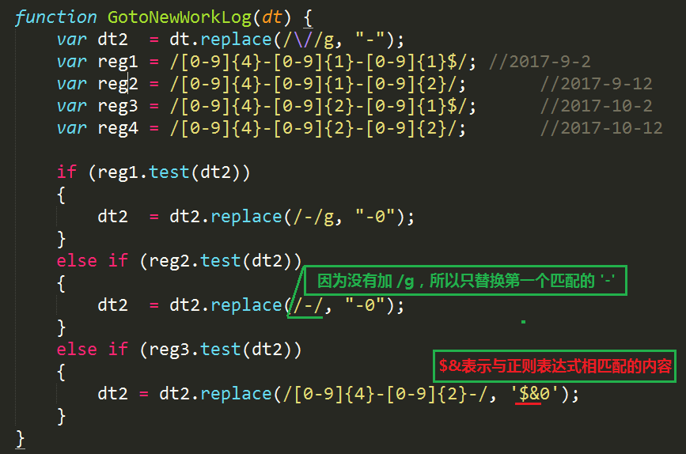
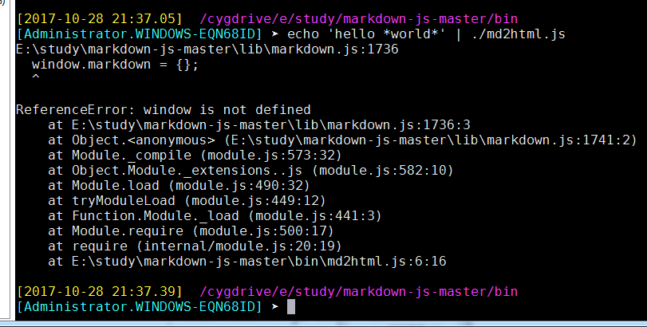

2017-10
上月 下月
2017-10上月 下月2017-10-06发现 MobaXterm 是个好东西让程序在后台运行的一个方法boa 的编译与使用2017-10-091、mobaxterm 升级2、mobaxterm 切换子窗口2017-10-10一、上班路上，发现一个服务器同步数据的好方法二、一个网页显示为乱码，原来的 charset=UTF-8,现改成charset=zh_GB2312,乱码解决三、svn 版本回退四、GDB使用技巧五、gdb真正的自动化命令清除断点的相关命令序列，只需输入断点号，然后直接输入endgdb 搜索功能六、使用gdb和core dump迅速定位段错误gdb 查看汇编代码gdb 输出格式GDB 查看数组GDB查看内存gdb 漂亮的显示项gdb查看寄存器删除不同目录中，相同类型的文件PC时钟中断，尚未研究，或已忘记删除同名目录linux 的一条查找命令Makefile 的一种风格，尚未消化markdown 的脚注用法1.效果：hello2、效果 hi3.斜体，只是加了一对星号*4、粗体，只是加了两对*5、列表,似乎不管用6、分隔线7、下划线win7 开机启动程序方法快速产生一个目录浏览树的 python 脚本 list.py程序员的必备技能,370多条2017-11-20再次追加2017-10-11一、版本编译二、用了人家的 ngrok，昙花一现运行起来之后的样子：2017-10-12一、更改目录所有者[10:05]准备把 linux 服务器磁盘空间没有充分利用的问题解决,linux 的关机[19:07]下面是讨厌的 samba 问题[12:02]DELL 服务器 PowerEdge R630 硬盘重新添加问题保留系统挂载新硬盘流程格式化分区,极慢（已经不适应时代潮流）用parted命令格式化硬盘,取代 fdiskpine64-image-debianmate-310102bsp-2.img.xz 下载完成，自制 linux 系统即将上马, 存于 f:\tools2017-10-13一、从外网远程家中电脑二、一个关于特殊符号的 python 正则表达式三、电脑装了两块硬盘，于是 samba 就得添加两个目录，操作起来虽然功能没问题，但是总是感觉不爽2017-10-141.form控件，代码为：2.javascript 的书写位置，代码为3.javascript 一个比较牛B的注释功能，支持 javascript 的浏览器会忽略掉注释功能而显示到网页，而不支持的浏览器会将什么都不显示4. 竟然还有办法关闭 javascript 功能5. html 引用外部 .js文件6.document.writeln 和 document.write 一样，竟然都不产生换行，还得依靠 "br",但是"pre"里面的东西为何没有反应？7.javascript 在网页中特殊符号的使用,可用函数 document.write解决8.javascript 中的数据类型9、null 的类型竟然是对象，而 undefined 就是真的未定义10.变量的定义与赋值，如果不赋不报错，只是没有内容11.动态（或者说叫宽松）的数据类型 ： var 后面几乎可以接任何类型12.变量的自动拼接13.一个用弹出框接收用户输入的例子,可以用这种方法实现个人学习网站的跳转。点一个按键，然后让用户输入日期，然后跳转14、确认框15、算术运算16、逻辑运算17、javascript 按位操作，与或18、javascript 按比特操作19、javascript 字符串比较20、将用户输入转化为 float 小数21、eval函数，将一段字符串，当作一个表达式计算，或者当作一个程序运行，然后给出返回值22、 switch 语句23、while loop24、do while , do-while 语句25、for 循环26、while 循环27、嵌套循环28、javascript 函数实现29、点击调用内部 javascript 函数，此办法可用于网站快速导航30、onClick事件调用内部函数31、变量的生命周期32、javascript 函数递归调用，很帅33、用户自定义对象，果然是个伪对象34、用户自定义对象，好高级的样子，竟然可以当构造函数 样用35、接收用户输入，为对象赋值，然后利用对象 this 进行计算36、创建图书对象，提供前后翻页功能37、with关键字，将输入参数变为默认对象 this38、遍历操作对象成员，document.write调用函数39、javascript 用prototype属性为类追加一个成员40、对字符串大小写转化如此轻松自如41、 javascript 数组操作，好奇怪 for(var i in book)，i的值竟然是0--5，而不是各个字符串42、字符串数组操作，效果很好43、用字符串作为索引的数组44、数组的长度用 book.length 属性提取45、数组操作的成员函数 arr1.concat(arr2)46、数组弹出操作 pop 函数47、数组操作 push 函数，向数组增加元素48、数组左移删除元素shift,右移插入元素 unshift49、数组切割arr.slice(start_idx包含, finish_idx不包含)50、数组重新拼接操作 splice(start_idx,num_to_remove,插入元素列表)51、最基本的时间操作函数52、将当前日期转化为周几53、计算还有几天过圣诞54、最基础的数学函数操作,指数/开方/PI55、小数向上/下取整数，四舍五入操作56、变量类型57、markdown 引用图片修改后，文件不能即时更新，需要将 markdown 文件关闭，重新打开后，就正常了58、定制自己的字体59、随心调整字符串显示格式60、字符串关键字查找61、字符串操作str.indexOf/substr()/lastIndexOf62、字符串替换操作63、小数格式化显示，指定小数位个数65、数字常数操作，二进制/八进制显示66、各种boolean 值的情况67、函数体竟然是个对象68、with关键字的另一个用法,十分方便编写代码69、获取全部浏览器信息70、浏览器信息71、检测浏览器是否支持某个插件72、浏览器的插件检测73、列举出浏览器已经安装的所有插件74、各种多媒体控件检测，全部列出75、打开新窗口76、打开与关闭窗口77、[2017-10-16 21:36]继续增加学习用例打开/关闭窗口78、frameset 拆分窗口79、frameset 做多界面导航2017-10-17[10：09]需求，makefile 能够编译单个文件，方便调试[10：16]终于找到解决方法：[10:38]完美调试通过[11:49]将远程机器传过来的文件改名保存tcc 运行代码[15:07] matlab line函数用法2017-10-18文档对象模型(DOM)要定位 html 元素，可以这样一个例子，用DOM 操作网页DOM属性展示DOM 在多子frame时，可操作任意一个子框将 markdown 转化为 htmlpip_install 真方便然后，顺便把 pip 版本也升个级将 markdown 文件转化为 html 的 python 脚本2017-10-19[9:07]立会结束，发现自己搭Gerrit教程[9:22] linux telnet安装[9:48] linux 服务器 telnet 客户端可以正常工作：[10:28] matlab 画分段直线[10:49] matlab 用变量拼接形成新的变量名[17:03]终于解决，一个以前遇到过的问题，今天又花了好长时间才解决：[17:37]无线路由器这两天无故找不到信号。只能用用线信号2017-10-22一、javascript 正则表达式二、日历控件下载链接三、markdown 中怎样添加链接四、写不出来，急得要哭的CSS代码五、将 markdown 文件，用python转化为html后，效果仍然不理想，虽然将 markdown 的 css 成功分离到独立文件中2017-10-24ftp 自动上传脚本一个独立实现的 ftpget 与 ftpput，原来如此简单，验证通过linux 下自己编译ftp客户端[13:53]linux tcl安装[14:34] jenkins 节点配置[15:29]红蜻蜓截屏软件，ctrl+shift+c 选定区域2017-10-25linux 文件时间与 windows samba 中看到的不一致1、先在命令行下查看，发现时间确实是当前时间。没错2、输入命令：`timedatectl发现时区为美国：Time zone: America/New_York (EDT, -0400)3、输入命令`[root@ make]#tzselect选择 Asia 5:再选择中国 china:9最后选择城市：北京，选择1[14:50]尝试自己写一个交换函数2017-10-26[9:46]GDB显示数组[10:17]快速排序算法qsort的使用2017-10-27[10:08]markdown 文件转换为 word 之后，大纲不能正常跳转。[13:59]为了考试作弊，需要在 linux 中打开 excel。但是 CentOS7 无默认 office,只得先安装之。[14:11]挂载 CentOS-7-x86_64-Everything-1511.iso修改 yum 源为本地源：清空所有包查找有几个仓库安装 wps-office-8.1.0.3724-0.1.b1p2.i686.rpm安装过程中，无故 secureCRT崩溃，再次连接，安装 wps即报错：于是百度 Another app is currently holding the yum lock; waiting for it to exit...这个报错，提示要 kill yum 这个进程：发现根本无法 kill 掉,所以要强制关掉 yum 进程：显然，删除之后，从进程里面还是能够看到 有 yum 进程在跑，但是却可以继续使用 yum 命令进行安装2017-10-28[6:41]首先到网上找到一份 CentOS-7-x86_64-Everything-1611.iso[7:12]将本地虚拟本，弄好CentOS-7-x86_64-Everything-1611.iso,让它自动安装wps[12:12]上午半天，只练了三次车[12:12]研究，如何使用 Docker / Coding /ngrok[12:20]来写个markdown 表格[15:40]受制于 source insight 很不爽，于是找到其替代品：官网meld，私藏meld windows版, 私藏meld linux版发现其用法与 SourceInsight 几乎无异，但人家是开源软件双击 Makefile，会看到差异：[19:21]每次上传 html 日记文件，都要连接COPY，很复杂，需要立即解决WEB自动上传的问题[20:26]我想要的效果：上传 markdown,然后 web 自动显示为 html[22:09]不得已，需要转向 marked.另一个 javascript 实现的将 markdown 转化为html的工具一、介绍：二、下载marked-master.zip三、编写测试用例，快速掌握四、进一步和 hilight.js配合，得到绚丽的彩色效果[2017-10-29]继续昨日工作五、 marked 项目运行 tdd，跑测试用例：六、命令行执行一个程序七、渲染函数八、使用 hilight.js九、词法器十、词法解析器 parser十一、一个例子十二、弄得这么累，看来是方法错了。 应该先多翻译几本书，结果会水到渠成十三、按http://ju.outofmemory.cn/entry/118199所讲，继续尝试1、进入 E:\study\javascript\marked-master\marked-master\bin，输入命令：marked -h,提示错误找不到node,因为这里是 windows ，所以需要更改一下 node.exe 作为环境变量,!/usr/bin/env node改为#!/cygdrive/f/tools/node.js/node.exe2、然后继续尝试命令 marked -h,仍然提示错误3、marked命令行的使用4、继续强化 marked 的使用5、强化渲染效果6、mark2.js换一种写法十四、node.exe相关文件上月 顶部 下月
2017-10-06
发现 MobaXterm 是个好东西
让程序在后台运行的一个方法
AخA[root@localhost ngrok]# setsid ./bin/ngrokd -tlsKey="assets/server/tls/snakeoil.key" -tlsCrt="assets/server/tls/snakeoil.crt" -domain="myngrok" -httpAddr=":80" -httpsAddr=":8082" -tunnelAddr=":8083"
boa 的编译与使用
一、下载版本boa-0.94.13.tar.gz
二、安装过程中要用到的工具：yac-tools-master.zip
三、进入目录 src，执行命令 ./configure，然后 make，如果当前环境没有安装lex工具。可以安装 flex，然后修改 Makefile,将
LEX = lex一句改为LEX = flex四、修改源码
五、编译成功之后，将 boa-0.94.13/boa.conf copy 到 /etc/boa/ 下面,因为 ./src/defines.h 中是这样定义的
xxxxxxxxxx/***** Change this, or use -c on the command line to specify it *****/xxxxxxxxxx[Administrator.WINDOWS-EQN68ID] ➤ mkdir /etc/boa[Administrator.WINDOWS-EQN68ID] ➤ cp boa.conf /etc/boa/[Administrator.WINDOWS-EQN68ID] ➤ ls /etc/boa/boa.conf它也提示了我们可以在运行命令时使用-c指定这个根目录。
另外，还需要进行修改：
xxxxxxxxxxGroup nogroup 改为 Group 0ScriptAlias /cgi-bin/ /usr/lib/cgi-bin/ 改为 ScriptAlias /cgi-bin/ /var/www/cgi-bin/因为系统默认是没有nogroup组的(0表示root组，可以使用id命令查看，见下)，但存在nobody用户，因此User一项可以不用修改。ScriptAlias一项指定了cgi程序的目录，这里我们设置为/var/www/cgi-bin，就是说以后的各种cgi程序就要放在这个目录了。
下面是从网上找到的配置说明，其实就是boa.conf的中文翻译而已
Port：boa服务器监听的端口，默认的端口是80。如果端口小于1024，则必须是 root用户启动服务器。 Listen：绑定的ip地址。不使用这个参数时，将绑定所有的地址。 User：连接到服务器的客户端的身份，可以是用户名或UID。 Group：连接到服务器的客户端的组，可以是组名或GID。 ServerAdmin：服务器出故障时要通知的邮箱地址。 ErrorLog：指定错误日志文件。如果路径没有以"/"开始，则相对于ServerRoot路径。没有配置时默 认的文件是/dev/stderr。若不想记录日志，指定文件为/dev/null。 AccessLog：设置存取日志文件，与ErrorLog类似。 UseLocaltime：设置使用本地时间，使用UTC时注释这个参数。这个参数没有值。 VerboseCGILogs：在错误日志文件中记录CGI启动和停止时间，若不记录，注释这个参数。这个参数没有值。 ServerName：指定服务器的名称，当客户端使用gethostname + gethostbyname时返回给客户端。 VirtualHost：虚拟主机开关。使用此参数，则会在DocumentRoot设定的 目录添加一个ip地址作为新的DocumentRoot来 处理客户端的请求。如DocumentRoot设置为/var/www，则http://localhost/转换 成/var/www/127.0.0.1/，若注释此参数，则为/var/www/。 DocumentRoot：HTML文件的根目录（也就是网站的目录）。 UserDir：指定用户目录。 DirectoryIndex：指定预生成目录信息的文件，注释此变量将使用DirectoryMaker变量。这个变量也就是设置默认主页的文件名。 DirectoryMaker：指定用于生成目录的程序，注释此变量将不允许列目录。 DirectoryCache：当DirectoryIndex文件不存在，而DirecotryMaker又被注释掉时，将列出这个参数指定目录给客户端。 KeepAliveMax：每个连接允许的请求数量。如果将此值设为" 0 "，将不限制请求的数目。 KeepAliveTimeOut：在关闭持久连接前等待下一个请求的秒数。（秒）。 MimeTypes：设置包含mimetypes信息的文件，一般是/etc/mime.types。 DefaultType：默认的mimetype类型，一般是text/html。 CGIPath：相当于给CGI程序使用的$PATH变量。 SinglePostLimit：一次POST允许最大的字节数，默认是1MB。 AddType: 增加MimeType没有指定的类型，例: AddType type extension [extension ...]。要使用cgi，必须添加cgi类型：AddType application/x-httpd-cgi cgi Redirect：重定向文件。 Aliases：指定路径的别名。 ScriptAlias：指定脚本路径的虚拟路径。六、将 mime.types copy 到 /etc/ 目录下
xxxxxxxxxx[Administrator.WINDOWS-EQN68ID] ➤ ls /etc/mime.types/etc/mime.types七、将 src 目录下生成的 boa 可执行文件 copy 到 /usr/bin 或者 /usr/local/bin 下面
xxxxxxxxxx[Administrator.WINDOWS-EQN68ID] ➤ cp boa.exe /usr/bin/八、正确创建 log 目录和文件
原因是没有按照 /etc/boa/boa.conf 的要求，配置正确的目录
正确创建 /var/log/boa/error_log
九、创建 web 文件，并成功访问
在目录 /var/www/下，创建 web 主页 index.html
运行程序，无报错。
在浏览器中访问
或者这样访问
十、进一步配置，指定配置文件
xxxxxxxxxx./boa -c /usr/local/nginx/html/web/即按照./boa -c /usr/local/nginx/html/web/ 目录下的配置文件 boa.conf 来启动程序
十一、配置 boa 根目录
DocumentRoot /var/www只需要更改 boa.conf 中的这一行即可，比如将其改成：
DocumentRoot /usr/local/nginx/html/web/然后这样运行：
xxxxxxxxxx[root@localhost packages]# boa -c /usr/local/nginx/html/web/然后即可在浏览器中正常浏览
十二、指定端口
boa.conf中，默认采用 80 端口作为 http 端口
xxxxxxxxxxPort 80十三、结束进程
xxxxxxxxxx[Administrator.WINDOWS-EQN68ID] ➤ ps aux | grep boa19064 1 13704 19064 pty4 10500 16:35:47 /usr/bin/boa

2017-10-09
1、mobaxterm 升级
apt-get install XX 想到什么就装什么 MobaXterm 破解版：http://www.pc6.com/softview/SoftView_479883.html MobaXterm 多种第三方工具： http://www.cnblogs.com/mengdeep/p/5296991.html
2、mobaxterm 切换子窗口
在 settings->General->MobaXterm Keyboard shortcuts->Reverse circle将其值改为 ALT+W,很顺利切换，不用换手
- F11切换全屏
- 在 settings->display 中，将 Quick connect 勾选去掉
- MobaXterm 可以录制脚本，然后对其进行编辑，录制好的脚本可以导出/导入
- 在 settings->General->MobaXterm Keyboard shortcuts->Reverse circle将其值改为 ALT+W,很顺利切换，不用换手
- F11切换全屏
- 在 settings->display 中，将 Quick connect 勾选去掉
- MobaXterm 可以录制脚本，然后对其进行编辑，录制好的脚本可以导出/导入
2017-10-10
一、上班路上，发现一个服务器同步数据的好方法
这位老兄讲的不错:http://blog.csdn.net/hyh9401/article/details/52043134
最近要做一个相关的解决方案，在虚拟机测试没有问题。给大家分享出来，有更好的解决方案，欢迎讨论。
1.1 inotify相关介绍
1、rsync
与传统的cp、tar备份方式相比，rsync具有安全性高、备份迅速、支持增量备份等优点，
通过rsync可以解决对实时性要求不高的数据备份需求，例如定期的备份文件服务器数据到远端服务器，
对本地磁盘定期做数据镜像等。
随着应用系统规模的不断扩大，对数据的安全性和可靠性也提出的更好的要求，
rsync在高端业务系统中也逐渐暴露出了很多不足，首先，rsync同步数据 时，需要扫描所有文件后进行比对，进行差量传输。如果文件数量达到了百万甚至千万量级，
扫描所有文件将是非常耗时的。而且正在发生变化的往往是其中很少的 一部分，这是非常低效的方式。其次，rsync不能实时的去监测、同步数据，
虽然它可以通过linux守护进程的方式进行触发同步，但是两次触发动作一定 会有时间差，这样就导致了服务端和客户端数据可能出现不一致，无法在应用故障时完全的恢复数据。
基于以上原因，rsync+inotify组合出现了！
2、inotify
Inotify 是一种强大的、细粒度的、异步的文件系统事件监控机制，linux内核从2.6.13起，
加入了Inotify支持，通过Inotify可以监控文件系统 中添加、删除，修改、移动等各种细微事件，
利用这个内核接口，第三方软件就可以监控文件系统下文件的各种变化情况，
而inotify-tools就是这样 的一个第三方软件。
在上面章节中，我们讲到，rsync可以实现触发式的文件同步，但是通过crontab守护进程方式进行触发，
同步的数据和实际数据会有差异，而inotify可以监控文件系统的各种变化，当文件有任何变动时，
就触发rsync同步，这样刚好解决了同步数据的实时性问题。
1.2 rsync+inotify同步逻辑图
1.3 环境部署
1、下载所需的安装包：
先把两个包放在/usr/src/下。
a、rsync下载路径：http://rsync.samba.org/ftp/rsync/src/rsync-3.0.9.tar.gz/
b、inotify下载路径：http://cloud.github.com/downloads/rvoicilas/inotify-tools/inotify-tools-3.14.tar.gz
2、第一台服务器(192.168.188.90)配置(不分主次)：
a、安装rsync:
[root@nginx ~]# cd /usr/src/
[root@nginx src]# tar zxvf rsync-3.0.9.tar.gz
[root@nginx src]# cd rsync-3.0.9
[root@nginx rsync-3.0.9]# ./configure --prefix=/usr/local/rsync
[root@nginx rsync-3.0.9]# make
[root@nginx rsync-3.0.9]# make install
b、创建密码认证文件：
[root@nginx rsync-3.0.9]# cd /usr/local/rsync/
[root@nginx rsync]# echo "rsync-pwd" >/usr/local/rsync/rsync1.passwd
c、给密码文件赋予600权限：
[root@nginx rsync]# chmod 600 rsync1.passwd
d、安装inotify:
[root@nginx rsync]# cd /usr/src/
[root@nginx src]# tar zxvf inotify-tools-3.14.tar.gz
[root@nginx src]# cd inotify-tools-3.14
[root@nginx inotify-tools-3.14]# ./configure --prefix=/usr/local/inotify
[root@nginx inotify-tools-3.14]# make
[root@nginx inotify-tools-3.14]# make install
e、创建监控脚本：
#!/bin/bash
host=192.168.188.89
src=/root/test/
des=web
user=webuser
/usr/local/inotify/bin/inotifywait -mrq --timefmt '%d/%m/%y %H:%M' --format '%T %w%f%e' -e modify,delete,create,attrib $src \
| while read files
do
/usr/bin/rsync -vzrtopg --delete --progress --password-file=/usr/local/rsync/rsync1.passwd $src $user@$host::$des
echo "${files} was rsynced" >>/tmp/rsync.log 2>&1
done
注意：host为第二台服务器IP，src为要监控的路径，web是认证模块名称，最后把监控脚本命名为rsync1.sh放在要监控的路径下。此处应是/root/test/
f、给监控脚本赋予764权限：
[root@nginx tmp]# chmod 764 rsync1.sh
g、创建rsync配置文件：
uid = root
gid = root
use chroot = no
max connections = 10
strict modes = yes
pid file = /var/run/rsyncd.pid
lock file = /var/run/rsync.lock
log file = /var/log/rsyncd.log
[web]
path = /root/test/
comment = web file
ignore errors
read only = no
write only = no
hosts allow = 192.168.188.89
hosts deny = *
list = false
uid = root
gid = root
auth users = webuser
secrets file = /usr/local/rsync/rsync1.passwd
该配置文件是用来接收另一台服务器的文件。其中web是server服务端（90服务器）的认证模块名称，需要与90服务器里的一致。把配置文件命名为rsync1.conf，放到/usr/local/rsync/目录里
h、启动该配置文件
[root@nginx-backup rsync]# /usr/local/rsync/bin/rsync --daemon --config=/usr/local/rsync/rsync1.conf
需要开机启动的话：
[root@nginx-backup rsync]# echo "/usr/local/rsync/bin/rsync --daemon --config=/usr/local/rsync/rsync1.conf" >> /etc/rc.local
3、第二台服务器(192.168.188.89)配置(不分主次)：
a、安装rsync:
[root@nginx ~]# cd /usr/src/
[root@nginx src]# tar zxvf rsync-3.0.9.tar.gz
[root@nginx src]# cd rsync-3.0.9
[root@nginx rsync-3.0.9]# ./configure --prefix=/usr/local/rsync
[root@nginx rsync-3.0.9]# make
[root@nginx rsync-3.0.9]# make install
b、创建密码认证文件：
[root@nginx rsync-3.0.9]# cd /usr/local/rsync/
[root@nginx rsync]# echo "rsync-pwd" >/usr/local/rsync/rsync2.passwd
c、给密码文件赋予600权限：
[root@nginx rsync]# chmod 600 rsync2.passwd
d、安装inotify:
[root@nginx rsync]# cd /usr/src/
[root@nginx src]# tar zxvf inotify-tools-3.14.tar.gz
[root@nginx src]# cd inotify-tools-3.14
[root@nginx inotify-tools-3.14]# ./configure --prefix=/usr/local/inotify
[root@nginx inotify-tools-3.14]# make
[root@nginx inotify-tools-3.14]# make install
e、创建监控脚本：
#!/bin/bash
host=192.168.188.90
src=/root/test/
des=web
user=webuser
/usr/local/inotify/bin/inotifywait -mrq --timefmt '%d/%m/%y %H:%M' --format '%T %w%f%e' -e modify,delete,create,attrib $src \
| while read files
do
/usr/bin/rsync -vzrtopg --delete --progress --password-file=/usr/local/rsync/rsync2.passwd $src $user@$host::$des
echo "${files} was rsynced" >>/tmp/rsync.log 2>&1
done
注意：host为第二台服务器IP，src为要监控的路径，web是认证模块名称，最后把监控脚本命名为rsync2.sh放在要监控的路径下。此处应是/root/test/
f、给监控脚本赋予764权限：
[root@nginx tmp]# chmod 764 rsync2.sh
g、创建rsync配置文件：
uid = root
gid = root
use chroot = no
max connections = 10
strict modes = yes
pid file = /var/run/rsyncd.pid
lock file = /var/run/rsync.lock
log file = /var/log/rsyncd.log
[web]
path = /root/test/
comment = web file
ignore errors
read only = no
write only = no
hosts allow = 192.168.188.90
hosts deny = *
list = false
uid = root
gid = root
auth users = webuser
secrets file = /usr/local/rsync/rsync2.passwd
该配置文件是用来接收另一台服务器的文件。其中web是server服务端（90服务器）的认证模块名称，
需要与90服务器里的一致。把配置文件命名为rsync2.conf，放到/usr/local/rsync/目录里
h、启动该配置文件
[root@nginx-backup rsync]# /usr/local/rsync/bin/rsync --daemon --config=/usr/local/rsync/rsync2.conf
需要开机启动的话：
[root@nginx-backup rsync]# echo "/usr/local/rsync/bin/rsync --daemon --config=/usr/local/rsync/rsync2.conf" >> /etc/rc.local
4、最后启动两台服务器的监控脚本：
a、在90服务器
[root@nginx tmp]# sh /root/test/rsync1.sh &
需要开机启动的话：
[root@nginx tmp]# echo "/root/test/rsync1.sh" >> /etc/rc.local
b、在89服务器：
[root@nginx tmp]# sh /root/test/rsync2.sh &
需要开机启动的话：
[root@nginx tmp]# echo "/root/test/rsync2.sh" >> /etc/rc.local
1.4测试
任意在其中一台服务器/root/test/路径下，新增一个文件，你会发现另一台服务器也同步了该文件。
同步之后，两台服务器下都会有rsync1.sh和rsync2.sh监控脚本，注意勿删！
如果需要3台或3台以上的服务器之间进行同步，则需要更改shell脚本，方法类似。 二、一个网页显示为乱码，原来的 charset=UTF-8,现改成charset=zh_GB2312,乱码解决
xxxxxxxxxx<html xmlns="http://www.w3.org/1999/xhtml" lang="zh-cn"><head><meta http-equiv="Content-Type" content="text/html; charset=zh_GB2312"></head></html>
三、svn 版本回退
xxxxxxxxxx$ svn up -r 54261
四、GDB使用技巧
面只例举一些比较常用的参数：
-symbols
-s
从指定文件中读取符号表。
-se file
从指定文件中读取符号表信息，并把他用在可执行文件中。
(gdb) set args 10 20 30 40 50
(gdb) show args
(gdb) path
(gdb) path
Executable and object file path: /bin:/bin:/drives/c/Users/ADMINI~1/DOCUME~1/MobaXterm/slash/bin:/drives/c/Windows:/drives/c/Windows/system32:/drives/c/Perl/site/bin:/drives/c/Perl/bin:/drives/c/PROGRAMDATA/ORACLE/JAVA/JAVAPATH:/drives/c/maven/BIN:/drives/c/PROGRAM FILES (X86)/NVIDIA CORPORATION/PHYSX/COMMON:/drives/c/RUBY22/BIN:/drives/c/WINDOWS/SYSTEM32:/drives/c/WINDOWS:/drives/c/WINDOWS/SYSTEM32/WBEM:/drives/c/WINDOWS/SYSTEM32/WINDOWSPOWERSHELL/V1.0:/drives/c/Program Files/Java/jdk1.8.0_60/BIN:/drives/c/PYTHON27:/drives/e/ADT-ECLIPSE/SDK/TOOLS:/drives/c/Program Files/Java/jdk1.8.0_60/JRE/BIN:/drives/c/Program Files/Java/jdk1.7.0_80/jre/BIN:/drives/e/ADT-ECLIPSE/APACHE ANT/APACHE-ANT-1.9.6/BIN:/drives/e/ADT-ECLIPSE/SDK/PLATFORM-TOOLS:/drives/c/maven/BIN:/drives/c/PROGRAM FILES (X86)/SUBLIME TEXT 2:/drives/c/PROGRAM FILES (X86)/NOTEPAD++:/drives/c/Program Files/Lenovo/Bluetooth Software:/drives/c/Program Files/Lenovo/Bluetooth Software/syswow64:/drives/c/Program Files/TortoiseGit/bin:/drives/c/svn-win32-1.6.16/bin:/drives/c/MinGW/bin:/drives/c/MATLAB7/bin/win32:/drives/c/Program Files (x86)/Windows Kits/8.1/Windows Performance Toolkit:/drives/c/Program Files/Microsoft SQL Server/110/Tools/Binn:/drives/c/Program Files (x86)/Microsoft SDKs/TypeScript/1.0:/drives/c/Program Files/Microsoft SQL Server/120/Tools/Binn:/drives/c/Go/bin:/drives/c/Program Files/Git/cmd:/drives/c/Program Files/Docker Toolbox:/usr/lib/lapack
(gdb) show path
Executable and object file path: /bin:/bin:/drives/c/Users/ADMINI~1/DOCUME~1/MobaXterm/slash/bin:/drives/c/Windows:/drives/c/Windows/system32:/drives/c/Perl/site/bin:/drives/c/Perl/bin:/drives/c/PROGRAMDATA/ORACLE/JAVA/JAVAPATH:/drives/c/maven/BIN:/drives/c/PROGRAM FILES (X86)/NVIDIA CORPORATION/PHYSX/COMMON:/drives/c/RUBY22/BIN:/drives/c/WINDOWS/SYSTEM32:/drives/c/WINDOWS:/drives/c/WINDOWS/SYSTEM32/WBEM:/drives/c/WINDOWS/SYSTEM32/WINDOWSPOWERSHELL/V1.0:/drives/c/Program Files/Java/jdk1.8.0_60/BIN:/drives/c/PYTHON27:/drives/e/ADT-ECLIPSE/SDK/TOOLS:/drives/c/Program Files/Java/jdk1.8.0_60/JRE/BIN:/drives/c/Program Files/Java/jdk1.7.0_80/jre/BIN:/drives/e/ADT-ECLIPSE/APACHE ANT/APACHE-ANT-1.9.6/BIN:/drives/e/ADT-ECLIPSE/SDK/PLATFORM-TOOLS:/drives/c/maven/BIN:/drives/c/PROGRAM FILES (X86)/SUBLIME TEXT 2:/drives/c/PROGRAM FILES (X86)/NOTEPAD++:/drives/c/Program Files/Lenovo/Bluetooth Software:/drives/c/Program Files/Lenovo/Bluetooth Software/syswow64:/drives/c/Program Files/TortoiseGit/bin:/drives/c/svn-win32-1.6.16/bin:/drives/c/MinGW/bin:/drives/c/MATLAB7/bin/win32:/drives/c/Program Files (x86)/Windows Kits/8.1/Windows Performance Toolkit:/drives/c/Program Files/Microsoft SQL Server/110/Tools/Binn:/drives/c/Program Files (x86)/Microsoft SDKs/TypeScript/1.0:/drives/c/Program Files/Microsoft SQL Server/120/Tools/Binn:/drives/c/Go/bin:/drives/c/Program Files/Git/cmd:/drives/c/Program Files/Docker Toolbox:/usr/lib/lapack
(gdb) show environment TMOUT
TMOUT = 0
(gdb) show environment USERNAME
USERNAME = Administrator
(gdb)
(gdb) show environment
HOMEPATH=\Users\Administrator
APPDATA=C:\Users\Administrator\AppData\Roaming
MOBANOACL=true
ProgramW6432=C:\Program Files
ANDROID_HOME=E:\adt-eclipse\sdk
SSH_PAGEANT_PID=9224
PROCESSOR_IDENTIFIER=Intel64 Family 6 Model 44 Stepping 2, GenuineIntel
TERM=xterm
SHELL=/bin/bash.exe
WINDIR=C:\Windows
HISTSIZE=36000
在指定条件下，断住 break ... if
如 break if i=100
表示 i 为 100 时，断住
watch 为表达式(变量expr设置一个观察点。一量表达式值有变化时，马上停住程序)
rwatch 当表达式（变量expr被读时，停住程序)
awatch 当表达式（变量的值被读或被写时，停住程序)
info watchpoints 列出当前所设置了的所观察点。
gdb) bt <--------------------- 查看函数堆栈。
gdb core
用gdb同时调试一个运行程序和core文件，core是程序非法执行后core dump后产生的文件。
(gdb) help
(gdb) pwd
Working directory /home/mobaxterm.
break *address 在程序运行的内存地址处停住。
clear
清除所的已定义的停止点。
delete [breakpoints] [range...] （如：3-7）。其简写命令为d
disable [breakpoints] [range...]
enable [breakpoints] [range...]
ignore
表示忽略断点号为bnum的停止条件count次。
断点设置在函数foo中，断点条件是x>0，如果程序被断住后，也就是，一旦x的值在foo函数中大于0，GDB会自动打印出x的值，并继续运行程序。
如果你要清除断点上的命令序列，那么只要简单的执行一下commands命令，并直接在打个end就行了。
set listsize 设置一次显示源代码的行数。
list + 往后显示源代码。五、gdb真正的自动化命令
清除断点的相关命令序列，只需输入断点号，然后直接输入end
gdb 搜索功能
六、使用gdb和core dump迅速定位段错误
一、什么是core dump
core：内存、核心的意思； dump：抛出，扔出； core dump：前提：当某程序崩溃的一瞬间，内核会抛出当时该程序进程的内存详细情况，存储在一个名叫core.xxx（xxx为一个数字，比如core.699）的文件中。二、更改生成的core文件的大小限制
可见，core文件是内核生成的，那某一个进程因为段错误而崩溃的时候的内存映像很大，那必然会生成一个很大的core文件，所以我们可以通过ulimit命令来设置生成core文件的大小，例如$ulimit -c unlimited，这里就是设置生成的core文件无大小限制三、生成core文件
当第二步完成了，就运行一次那个有问题的程序，然后自然就会因为段错误而崩溃，在当前目录下就生成了core.xxx文件。四、分析core文
使用命令$gdb 程序名 core.xxx，然后再输入where就可以看到产生段错误的地方五、实例分析
1.test.c文件的源代码
xxxxxxxxxxvoid do_it();int main(){do_it();return 0;}void do_it(){char* p = 1;*p = 'a';}2.编译该源代码，请注意，加-g标签，可以在where命令后看到更加详细的信息。
x[michael@localhost core_dump]$ gcc -g ./test.c./test.c: In function ‘do_it’:./test.c:9:19: warning: initialization makes pointer from integer without a cast[michael@localhost core_dump]$ ./a.outSegmentation fault (core dumped)[michael@localhost core_dump]$ lltotal 80-rwxrwxr-x. 1 michael michael 5612 May 2 15:54 a.out-rw-------. 1 michael michael 204800 May 2 15:58 core.7369-rw-rw-r--. 1 michael michael 383 May 2 15:53 test.c3、使用gdb调试core文件,
gdb ./a.out ./core.7369,最后看出来在第10行xxxxxxxxxx[michael@localhost core_dump]$ gdb ./a.out ./core.7369GNU gdb (GDB) Fedora (7.2-52.fc14)Copyright (C) 2010 Free Software Foundation, Inc.License GPLv3+: GNU GPL version 3 or later <http://gnu.org/licenses/gpl.html>This is free software: you are free to change and redistribute it.There is NO WARRANTY, to the extent permitted by law. Type "show copying"and "show warranty" for details.This GDB was configured as "i686-redhat-linux-gnu".For bug reporting instructions, please see:<http://www.gnu.org/software/gdb/bugs/>...Reading symbols from /home/michael/core_dump/a.out...done.[New Thread 7369]Missing separate debuginfo forTry: yum --disablerepo='*' --enablerepo='*-debuginfo' install /usr/lib/debug/.build-id/c4/1c574f31a203492b9389c783adad6ff1989915Reading symbols from /lib/libc.so.6...(no debugging symbols found)...done.Loaded symbols for /lib/libc.so.6Reading symbols from /lib/ld-linux.so.2...(no debugging symbols found)...done.Loaded symbols for /lib/ld-linux.so.2Core was generated by `./a.out'.Program terminated with signal 11, Segmentation fault.#0 0x080483b8 in do_it () at ./test.c:1010 *p = 'a'; //真正产生段错误的在这里，试图更改地址1的值，此时内核会终止该进程，并且把core文件dump出来Missing separate debuginfos, use: debuginfo-install glibc-2.13-2.i686(gdb)运行命令：where，即可看到出现段错误的行数了，如下打印：(gdb) where#0 0x080483b8 in do_it () at ./test.c:10#1 0x0804839f in main () at ./test.c:4(gdb)
gdb 查看汇编代码
(gdb) disassemble func Dump of assembler code for function func: 0x8048450 : push %ebp 0x8048451 : mov %esp,%ebp 0x8048453 : sub $0x18,%esp 0x8048456 : movl $0x0,0xfffffffc(%ebp) 0x804845d : movl $0x1,0xfffffff8(%ebp) 0x8048464 : mov 0xfffffff8(%ebp),%eax 0x8048467 : cmp 0x8(%ebp),%eax 0x804846a : jle 0x8048470 0x804846c : jmp 0x8048480 0x804846e : mov %esi,%esi 0x8048470 : mov 0xfffffff8(%ebp),%eax 0x8048473 : add %eax,0xfffffffc(%ebp) 0x8048476 : incl 0xfffffff8(%ebp) 0x8048479 : jmp 0x8048464 0x804847b : nop 0x804847c : lea 0x0(%esi,1),%esi 0x8048480 : mov 0xfffffffc(%ebp),%edx 0x8048483 : mov %edx,%eax 0x8048485 : jmp 0x8048487 0x8048487 : mov %ebp,%esp 0x8048489 : pop %ebp 0x804848a : ret End of assembler dump.
gdb 输出格式
xxxxxxxxxx一般来说，GDB会根据变量的类型输出变量的值。但你也可以自定义GDB的输出的格式。例如，你想输出一个整数的十六进制，或是二进制来查看这个整型变量的中的位的情况。要做到这样，你可以使用GDB的数据显示格式：x 按十六进制格式显示变量。d 按十进制格式显示变量。u 按十六进制格式显示无符号整型。o 按八进制格式显示变量。t 按二进制格式显示变量。a 按十六进制格式显示变量。c 按字符格式显示变量。f 按浮点数格式显示变量。(gdb) p i$21 = 101(gdb) p/a i$22 = 0x65(gdb) p/c i$23 = 101 'e'(gdb) p/f i$24 = 1.41531145e-43(gdb) p/x i$25 = 0x65(gdb) p/t i$26 = 1100101
GDB 查看数组
xxxxxxxxxx(gdb) p *array@len$1 = {2, 4, 6, 8, 10, 12, 14, 16, 18, 20, 22, 24, 26, 28, 30, 32, 34, 36, 38, 40}
GDB查看内存
xxxxxxxxxx你可以使用examine命令（简写是x）来查看内存地址中的值。x命令的语法如下所示：x/ n、f、u是可选的参数。n 是一个正整数，表示显示内存的长度，也就是说从当前地址向后显示几个地址的内容。f 表示显示的格式，参见上面。如果地址所指的是字符串，那么格式可以是s，如果地十是指令地址，那么格式可以是i。u 表示从当前地址往后请求的字节数，如果不指定的话，GDB默认是4个bytes。u参数可以用下面的字符来代替，b表示单字节，h表示双字节，w表示四字节，g表示八字节。当我们指定了字节长度后，GDB会从指内存定的内存地址开始，读写指定字节，并把其当作一个值取出来。 表示一个内存地址。n/f/u三个参数可以一起使用。例如：命令：x/3uh 0x54320 表示，从内存地址0x54320读取内容，h表示以双字节为一个单位，3表示个单位，u表示按十六进制显示。x/3uhx/3uwx/3xh(gdb) x/4xw sub0x8048448 <sub>: 0x8be58955 0x452b0845 0x55c35d0c 0x458be589
gdb 漂亮的显示项
xxxxxxxxxxset print addressset print address onshow print addressset print array offshow print arrayset print elementsshow print elementsset print null-stopset print pretty onset print unionshow print unionset print objectshow print objectset print static-membersshow print static-membersset print vtblshow print vtbl
gdb查看寄存器
(gdb) info register eax 0x1 1 ecx 0xbffff6c0 -1073744192 edx 0xbffff6e4 -1073744156 ebx 0xb7fbd000 -1208233984 esp 0xbffff6a0 0xbffff6a0 ebp 0xbffff6a8 0xbffff6a8 esi 0x0 0 edi 0x0 0 eip 0x804847c 0x804847c <main+17> eflags 0x286 [ PF SF IF ] cs 0x73 115 ss 0x7b 123 ds 0x7b 123 es 0x7b 123 fs 0x0 0 gs 0x33 51 (gdb) (gdb) info all-registers Invalid register ` ' (gdb) info all-register eax 0x1 1 ecx 0xbffff6c0 -1073744192 edx 0xbffff6e4 -1073744156 ebx 0xb7fbd000 -1208233984 esp 0xbffff6a0 0xbffff6a0 ebp 0xbffff6a8 0xbffff6a8 esi 0x0 0 edi 0x0 0 eip 0x804847c 0x804847c <main+17> eflags 0x286 [ PF SF IF ] cs 0x73 115 ss 0x7b 123 ds 0x7b 123 es 0x7b 123 fs 0x0 0 gs 0x33 51 st0 0 (raw 0x00000000000000000000) st1 0 (raw 0x00000000000000000000) st2 0 (raw 0x00000000000000000000) st3 0 (raw 0x00000000000000000000) st4 0 (raw 0x00000000000000000000) st5 0 (raw 0x00000000000000000000) st6 0 (raw 0x00000000000000000000) st7 0 (raw 0x00000000000000000000) fctrl 0x37f 895 (gdb) p $ip #当前运行的指令地址（ip） $1 = void (gdb) p $eip $2 = (void (*)()) 0x804847c <main+17> (gdb) (gdb) p $sp #程序的当前堆栈地址 $4 = (void *) 0xbffff6a0 (gdb) p $ds $5 = 123 (gdb) p $fs $6 = 0 (gdb) p $gs $7 = 51 (gdb)
删除不同目录中，相同类型的文件
xxxxxxxxxxFOR %%I IN (E:\wftp\test) DO CD /D %%I & FOR %%J IN (filename1, filename2, *.tx) DO DEL %%J /a/f/s/q原文：FOR %%I IN (c:,d:,e:) DO CD /D %%I & FOR %% J IN (filename1, filename2, filename3) DO DEL %%J /A HS /F /S
PC时钟中断，尚未研究，或已忘记
xxxxxxxxxxtypedef unsigned short WORD;WORD wGlobal_SystemDivide = 2;WORD wGlobal_SystemCounter = 0;//函数原型:void ChangeSystemTimer(WORD wDivide)//函数作用:改变系统定时器//入口参数:WORD wDivide ---- 分频数，取值在1~16之间// wDivide = 1时,每秒中断(18.2 * pow(2,1- 1)次,即54.94mS中断一次// wDivide = X时,每秒中断(18.2 * pow(2,X-1))次//出口参数：无//返回值：无//传递参数时用"wGlobal_SystemDivide"全局变量void ChangeSystemTimer(WORD wDivide){//时钟是1.1931817MHz//计算计数值WORD wTimer = (WORD)((65536L >> (wDivide - 1u)));//选择计数器0, 先低后高读/写入,模式3,二进制数计数asm mov al, 00110110B //36Hasm out 43H, al//选择模式asm mov ax, wTimerasm out 40H, Al//写入低字节asm mov al, ahasm out 40H, Al//写入高字节return;}//中断0x1C需要修改void far interrupt NewInt1C(){//在中断函数里面不要执行浮点运算,否则需要保护数学协处理器FCU,指令是FSave,FWait和frstorasm mov ax, seg wGlobal_SystemCounterasm mov ds, axif ((++wGlobal_SystemCounter) >= (1 << (wGlobal_SystemDivide - 1))){wGlobal_SystemCounter = 0;//这里调用老的中断1CH}//这里执行您自己的函数//...return;}//需要修改老的delay函数void NewDelay(WORD wMilloSeconds){for (int i = 0; i < (1 << (wGlobal_SystemDivide - 1)); i++){//这里有错,以后修改::delay(wMilloSeconds);}}首先要学会对8253编程，然后学会中断处理，用后台处理程序！你先看看下面的介绍吧：(一)：8253原理及编程PC机采用一块8253定时器芯片计算系统时钟的脉冲，若干个系统时钟周期转换成一个脉冲，这些脉冲序列可以用以计时，也可以送入计算机的扬声器产生特定频率的声音。8253定时器芯片独立于CPU运行，它可以象实时时钟那样，CPU的工作状态对它没有任何影响。8253芯片有三个独立的通道，每个通道的功能各不相同，三个通道的功能如下：通道0：为系统时钟所用，在启动时由BIOS置入初值，每秒钟约发出18.2个脉冲，脉冲的计数值存放在BIOS数据区的0040:006c储单元中(注意，这个单元的内容对我们非常有用！)，通道0的输出脉冲作为申请定时器中断的请求信号，还用于磁盘的某些定时操作，如果改变了通道0的计数值，必须确保在CPU每次访问磁盘以前恢复原来的读数，否则将使磁盘读写产生错误。通道1：用于控制计算机的动态RAM刷新速率，一般情况下不要去改变它。通道2：连接计算机的扬声器，产生单一的方波信号控制扬声器发声。8253定时器芯片的每一个通道含有3个寄存器，CPU通过访问3个端口(通道0为40h，通道1为41h，通道2为42h)来访问各个端口的3个寄存器，8253每个端口有6种工作模式，当通道0用于定时或通道2用于定时或发声时，一般用模式3。在模式3下，计数值被置入锁存器后立即复制到计数器，计数器在每次系统时钟到来时减1，减至0后一方面马上从锁存器中重新读取计数值，另一方面向CPU发出一个中断请求(INT 1CH中断，很有用)，如此循环在输出线上高低电平的时间各占计数时间的一半，从而产生方波输出。对8253定时器芯片编程是通过命令端口寄存器(控制字寄存器)43h来实现，它决定选用的通道、工作模式、送入锁存器的计数值是一字节还是两字节、是二进制码还是BCD码等工作参数，端口43h各位的组合形式如下：控制字寄存器各位的功能表示D7 D6 D5 D4 D3 D2 D1 D0---------------------------------------------------| SC1 SC0 | RL1 RL0 | M2 M1 M0 | BCD |---------------------------------------------------D0 位____若为0则采用二进制表示，否则用BCD码表示计数值。D3-D1位____工作模式号，其值(0-5)对应6种模式。D5-D4位____操作的类型：00：把通道中当前数据寄存器的值送入16位锁存器中，供CPU读取该值；01：表示只读/写低8位字节数据，只写入低8位时，高8位自动置为0；10：表示只读/写高8位字节数据，只写入高8位时，低8位自动置为0；11：允许读/写16位字数据，8253的数据线只有8位，读/写时必须分两次进行，先读/写低8位字节，再读/写高8位字节；D7-D6位____决定选用的通道号，其值为0-2。对8253芯片编程的三个步骤：1．设置命令端口43h:设置控制字，用来选择通道、工作模式、传输方式等，以备传输。2．向端口发送一个工作状态字节：将一个字的计数值，按先低字节后高字节的顺序送入通道的I/O端口寄存器(通道0为40h，通道1为41h，通道2为42h)。//即设置技术初值3．确定定时器的工作方式：若是通道2，给端口61h(8255芯片接口)的第0位和第1位置数，启动时钟信号，当第1位置1时，通道2驱动扬声器，置0时用于定时操作；当第3个步骤完成后被编程的通道马上在新的状态下开始工作。由于8253的三个通道都独立于CPU运行，所以在程序结束以前要恢复各通道的正常状态值。（二）在后台运行程序所谓后台运行就是在游戏运行当中“同时“运行其它的程序，如在游戏中演奏背景音乐、游戏计时等，这些工作看起来好象与游戏过程“同时“在进行。这里的“同时“其实就是利用中断的方法来实现的，即在游戏中每隔一定时间产生一次中断去做其他工作，完成后再回到游戏中。在BIOS中包含了一个特殊的伪中断----INT 1CH中断，这一中断在BIOS初始化时没有任何作用，它的中断处理程序只有一条中断返回语句----IRET，因此该中断一经调用立即返回。INT 1CH中断是在BIOS中断INT 8H修正日历计数后由该中断调用，和INT 8H中断程序一起以定时器中断频率(正常情况下为每秒钟18.2次)不停地执行而与CPU无关，我们可以改变这一中断，使它指向我们的中断处理程序，当我们改变了时间定时器的值以后，INT 1CH程序将按改变后的频率被调用。重置INT 1CH中断向量前必须先保存好原来的INT 1CH中断向量，以便在我们的程序运行结束时再恢复它，否则将引起系统崩溃。另外，中断处理程序的处理时间不能超过定时器确定的时间，否则将死机，所以在中断处理程序里不能运行太多的代码，也不能调用与C相关的函数，如sound,delay等。编写新的INT 1CH中断程序的方法如下：1. 设置一个中断类型的函数指针用来保存原先的INT 1CH中断向量：void interrupt far (*OldInt1chHandler)();2. 编写新的INT 1CH 中断程序：void far interrupt NewInt1ch(void){/*我们的中断程序*/}3. 保存原来的INT 1CH 中断向量：OldInt1chHandler = getvect(0x1c);4. 设置新的 INT 1CH 中断向量：setvect(0x1c,NewInt1ch);5. 恢复旧的 INT 1CH中断程序：setvect(0x1c, OldInt1chHandler);看了这些后我想你应该明白怎么做了。下面是一个简单的带背景音乐的动画程序，你看看有没有不明白的：（只要看怎样设置中断处理来添加背景音乐就行了）void interrupt(* handler)( );void interrupt music( );int handle,control;enum NOTES{C10=131,D10=147,E10=165,F10=175,G10=196,A10=220,B10=247,C0=262, D0=296, E0=330, F0=349, G0=392, A0=440, B0=494,C1=523, D1=587, E1=659, F1=698, G1=784, A1=880, B1=988,C2=1047, D2=1175, E2=1319, F2=1397, G2=1568, A2=1760, B2=1796}song[]={E1,N4,E1,N8,E1,N8,F1,N4,G1,N4,F1,N4,F1,N4,E1,N4,D1,N4,C1,N4,C1,N4,D1,N4,E1,N4,E1,N4,D1,N4,D1,N4,E1,N4,E1,N8,E1,N8,F1,N4,G1,N4,G1,N4,F1,N4,E1,N4,D1,N4,C1,N4,C1,N4,D1,N4,E1,N4,D1,N4,D1,N4,C1,N4,D1,N4,D1,N8,D1,N8,E1,N4,C1,N4,D1,N4,E1,N8,F1,N8,E1,N4,C1,N4,D1,N4,E1,N8,F1,N8,E1,N4,C1,N4,C1,N4,D1,N4,G0,N4,E1,N4,E1,N4,E1,N8,F1,N4,G1,N4,G1,N4,F1,N4,E1,N4,D1,N4,C1,N4,C1,N4,D1,N4,E1,N4,E1,N4,D1,N4,C1,N4,D1,N4,END,END};main(){int gdriver=VGA,gmode=1,i;initgraph (&gdriver,&gmode," ");handler=getvect(0x1c);setvect(0x1c,music);cleardevice( );setbkcolor(BLUE);setcolor(YELLOW);setfillstyle(SOLID_FILL,RED);sector(200,150,50,120,70,50);bar3d(400,150,500,200,10,5);setactivepage(1);sector(200,150,50,170,70,50);bar3d(400,200,500,250,10,5);for(i=0;i<100;i++){while(kbhit()) goto end;setvisualpage(1);delay((100-i)*10);setvisualpage(0);delay((100-i)*10);}end:;outportb(0x61,control&0xfe);setvect(0x1c,handler);cleardevice();getch();closegraph();}void interrupt music( ){static int flag=0,note=0,fre,dur=8;flag++;fre=song[note];dur=song[note+1];if(/*flag>(int)dur*2/5*/fre){flag=0;outportb(0x43,0xb6);fre=(unsigned)(1193180L/fre);outportb(0x42,(char)fre);outportb(0x42,(char)(fre>>8));control=inportb(0x61);outportb(0x61,(control)|0x3);note=note+2;if(note>=134)note=0;}handler();}
删除同名目录
xxxxxxxxxx@echo offfor /d /r c:\ %%b in (*usb*) do rd /s /q "%%b"pause将以上内容存为一个批处理文件，双击运行即可删除C盘所有名字包含有USB的文件夹（包括子文件夹）del X:\_desktop.ini /f /s /q /a 批量删除同名文件 （_desktop.ini）ren X:\*.png *.gif 批量修改文件名后缀 （*.png -->*.gif）attrib c:\"*" -s -h /s /d 批量修改隐藏文件属性命令详解：语法attrib [{+r | -r}] [{+a | -a}] [{+s | -s}] [{+h | -h}]attrib [[Drive:][Path] FileName] [/s[/d]]
linux 的一条查找命令
[root@S110019789-13 9806]# grep -rn "EOMB_SLOT_END" .|grep -v svn
Makefile 的一种风格，尚未消化
xxxxxxxxxx自己调试通过的一个通用makefile模板分类： Linux随笔 2013-12-25 08:38 1890人阅读 评论(0) 收藏 举报makefile这个是从本人的QQ空间转过来的模板文件夹的下载地址：http://download.csdn.net/detail/longyue0917/6725889这个模板是之前公司的一个牛人写的，我这个连门都没入的菜鸟因为没有项目需求，所以一直没有花时间去研究。可惜好景不长，酱油没打几天，就需要我来单挑linux了，网上找了很多模板，都不尽如人意，没办法，只好硬着头皮来啃这个模板了，由于水平有限，有错漏的地方欢迎指出交流======================================补记：MAKE := make -r -R -s其中-rR参数是使用隐含规则(以免make自做聪明)，-s参数是禁止命令的回显(比如gcc命令输出的 gcc -c -o .... 等字样)rules.mk中，每条执行前都有$(make_debug) 字样，这个是可以在common.mk中选择是否显示执行的make命令的，比如：make[1]:正在离开目录 `/data/mktest/aptt3/lib_bar'make[1]: 正在进入目录 `/data/mktest/aptt3/lib_foo'======================================文件结构：Makefile| -- makefiles| | -- rules.mk / common.mk / arm.mk / i386.mk| -- third_party| -- includes| -- app_test| -- lib_bar / lib_foo由于这个make模板的功能很强大，我们就跟着make的运行过程分析，所以文件会交叉：首先是顶层makefile：#声明路径和包含export TOP_DIR := $(realpath .)include $(TOP_DIR)/makefiles/common.mk然后一般我们执行的都是make all，所以直接看all依赖：# 依次运行make_in_list中的makeall:@$(call make_in_list, $(make_list), all)先看 make_list变量：make_list := lib_barmake_list += lib_foomake_list += app_test注意主文件锁在的命令要放最后，因为主文件依赖于前面两个目录所产生的库然后看 make_in_list函数，在common.mk文件中:# make -r -R -s -C lib_mcu all -j 1#-C -- 指定路径#-r/R -- 禁止隐含规则#-s -- 不显示命令输出#-j -- 同时运行命令的个数make_in_list = list="$(1)"; for p inlist;do$(MAKE)−Cp $(2) -j $(jobnums); done展开来就是：for p in make_list; do make -c p all -j 1; done不难理解：分别执行make_list路径的make我们以lib_foo命令为例说明：由于内容少，我就直接贴完了#这里好理解，指定命令，包含common.mkTOP_DIR = $(realpath ../)include $(TOP_DIR)/makefiles/common.mkifeq (arm, $(ARCH))else ifeq (i386, $(ARCH))endif#这里指定本目录索要关联的Lib，注意这里指的是lib_xxx目录，而不是第三方lib，后面会从代码中说明libs =#指定本目录生成的lib名，一般和命令名一直lib_name = foo#自定义的cflag参数defines += -DDEBUG#debug_ar_lib是依赖，实现在下面的rules.mk中all:debug_ar_libinclude $(TOP_DIR)/makefiles/rules.mk好了，我们进rules.mk看看在看实现代码前，我们注意到文件开头有.init. : $(init_dirs);这个是由一个include自动调用的：见最后：ifneq (help, $(findstring help, $(MAKECMDGOALS)))ifneq (clean, $(findstring clean, $(MAKECMDGOALS)))-include .init.endifendif这个规则干的事很简单：# mkdir -p -- 目录不存在则创建$(init_dirs):$(make_debug)$(call echo_make_info, 'mkdir', $@)$(make_debug)mkdir -p $@而 init_dirs变量则在common.mk中，我就不贴了，就是指定build文件夹来放置编译的依赖文件和中间文件echo_make_info函数也在common.mk中，用printf来打印输出信息 <用printf的好处是可以格式化数据># 打印make信息echo_make_info = printf " [%s] %-8s -> %-16s %s %s...\n" $(ARCH) $(1) $(lib_name) $(2)这里我们注意到，格式化是实体是5个，而可变参数却只有4个，因为当其中一个可变参数是用空格隔开的时候，会多占一个%s，最后的'...'不知道是自动扩展%s, 还是装饰，刚想到，还未验证。#然后看进debug_ar_libdebug_ar_lib : $(cur_ar_lib) ;先到commond看cur_ar_lib的定义：# 根据makefile指定的lib_name合成lib的名字cur_ar_lib = lib$(lib_name).$(ar_suffix)ar_suffix ?= $(ARCH).a其中lib_name就是子目录设置的参数foo，这里就直接合成了libfoo.i386.o继续回rule中：# make目录中的c,cpp源文件 (ar_objs在common.mk中)#echo_make_info -- 打印make信息 ($@ - 源)$(cur_ar_lib) : $(ar_objs)$(make_debug)$(call echo_make_info, 'make', $@) # 打印make信息$(make_debug)$(AR) $(arflags) $@ $^ # 创建库最后一行是用ar将生成的.o文件合成.a库文件o文件怎么生成的呢，继续看 $(ar_objs)# 从build目录中滤除主文件main的obj对象，makefile的语法网上很多，这里我就不详细介绍了，baidu一下就出来了# 因为rule是通用规则，所以主文件Make的时候也会调用这个规则，而main文件是不参加库的合成的，所以这里要从o文件堆中滤除main.o文件。注意，如果主文件不是main.c，那么这里的名字也要做对应的修改ar_objs := $(filter-out $(build_dir)/main.$(obj_suffix),$(cur_objs))继续看cur_objs是怎么定义的：# 编译的结果放入".build"中间目录中 -- 含有编译步骤(rules.mk的开头有对应规则)cur_objs := $(addprefix $(build_dir)/, $(cur_c_sources:%.c=%.$(obj_suffix)))cur_objs += $(addprefix $(build_dir)/, $(cur_cpp_sources:%.cpp=%.$(obj_suffix)))可见，obj是从c/cpp的源中提取出来的，然后给加上build_dir前缀，也就是将生成的o文件放入build_dir中# build的定义：由于.开头的文件会隐藏，所以我去掉了.# 这里要注意一点，由于这个rule是从子目录中包含进来的，所以路径始终还是在子目录中，所以这里的build是在子目录下创建的# o文件保存的中间目录build_dir := build# 提取c文件cur_c_sources := $(wildcard *.c)# 提取cpp文件cur_cpp_sources := $(wildcard *.cpp)这个时候初学者一定会问了，rule的最后是将o文件连接为a库文件，cur_objs只是取出了o文件，那么o文件是怎么生成的呢？o文件的生成就是cur_objs := 这一行中，最后有 %.c=%.$(obj_suffix)# c文件编译为o的规则$(build_dir)/%.$(obj_suffix) : %.cpp$(make_debug)$(call echo_make_info, 'make', $@)# 显示make信息$(make_debug)$(CPP) $(cppflags) $(defines) -c -o $@ $<# g++# cpp文件编译为o的规则$(build_dir)/%.$(obj_suffix) : %.c$(make_debug)$(call echo_make_info, 'make', $@)$(make_debug)$(CC) $(cflags) $(defines) -c -o $@ $<# gcc从这里就可以看出，子目录make中的defines的作用就是加上定制的cflags，顺便看下默认的cflags：defines += -DARCH_$(ARCH)# g++参数#-std=c++0x -- 支持c++11标准 (gcc 4.3以上, 4.7以上参数修改为c++11)cppflags += -Wall -Werror -std=c++0x -g -O0 -I$(TOP_DIR) -I. $(pkg_cflags)cppflags += -I$(third_party_inc_dir)# gcc参数#-Wall -- 警告当错误处理#-g -O0 -- 优化等级#-I -- 指定头文件地址# cflags += -Wall -Werror -g -O0cflags += -Wall -g -O0 -I$(TOP_DIR) $(pkg_cflags)cflags += -I$(third_party_inc_dir)-I指示了系统头文件的查找目录，如果有指定定义的头文件，则也需要添加到这里如我就做了如下修改：-I$(top_inc_dir)，top_inc_dir := $(TOP_DIR)/includes加入了一个公共includes，现在我也明白了linux为什么喜欢把头文件扔一起了这里有另外一个参数：pkg_cflags，理解起来有点复杂：这里通过子目录传递下来的lib_name和libs的设置给添加同的参数如果定义了lib_name，则说明该子目录自己会编译成一个库文件，所以PKG的路径就设置为当前路径# test -z -- 判断lib_name是否为空pkg_cflags += $(shell test -z $(lib_name) || (export PKG_CONFIG_PATH=.;pkg-config \--define-variable=prefix=$(TOP_DIR)/$(dir_name) \--define-variable=ARCH=$(ARCH) --cflags $(lib_name)))#这里是lib的参数，指定了PKG搜索lib的路径，由于是本身，所以意义不大pkg_libs += $(shell test -z $(lib_name) || (export PKG_CONFIG_PATH=.;pkg-config \--define-variable=prefix=$(TOP_DIR)/$(dir_name) \--define-variable=ARCH=$(ARCH) --libs $(lib_name)))# 搜索libs库# 当子目录有依赖其他库的时候，会设置libs，所以这里就是一个循环，依次加入lib库的搜索路径pkg_cflags += $(shell list='$(libs)'; for p in $$list; do \export PKG_CONFIG_PATH=$(TOP_DIR)/lib_$$p;pkg-config \--define-variable=prefix=$(TOP_DIR)/lib_$$p \--define-variable=ARCH=$(ARCH) --cflags $$p;done)# 这里将lib的make参数传入pkg_libs += $(shell list='$(libs)'; for p in $$list; do \export PKG_CONFIG_PATH=$(TOP_DIR)/lib_$$p;pkg-config \--define-variable=prefix=$(TOP_DIR)/lib_$$p \--define-variable=ARCH=$(ARCH) --libs $$p;done)关于pkgconfig，自己baidu下吧，我的理解也不是很深，和pkg配合的还有一个pc文件，我也只是仿造已有的进行修改的最后这里是将lib的标记加入make参数中，注意库的连接是在创建依赖文件d文件的时候进行的# lib标记，创建依赖文件时使用libflags += -L$(third_party_lib_dir)libflags += $(pkg_libs)这里有一个文件，libflags虽然给出了第三方库的路径，但是如果我程序中要使用第三方库，则目前看来是需要将参数写进libs中，但从上面很明显的看出写入libs会给make加入多余的参数，所以我给libflags加了扩展：libflags += $(third_party_lib)然后third_party_lib由子目录的make传入就可以了刚才大家应该都发现了，在gcc编译的时候，只用了cflags参数，但是没有连接lib，其实lib的连接是自动进行的，在rule文件中用include进行了自动依赖：# 自动创建依赖文件auto_deps = 0ifeq (,$(MAKECMDGOALS))auto_deps = 1else ifeq (all, $(findstring all, $(MAKECMDGOALS)))auto_deps = 1endififeq (1, $(auto_deps))-include $(cur_deps)endif同样看cur_deps：# 依赖文件(rules.mk中用include自动调用依赖对象的编译)cur_deps := $(addprefix $(build_dir)/, $(cur_c_sources:%.c=%.$(dep_suffix)))cur_deps += $(addprefix $(build_dir)/, $(cur_cpp_sources:%.cpp=%.$(dep_suffix)))和上面的gcc一样吧，然后看执行：# 依赖文件创建规则$(build_dir)/%.$(dep_suffix) : %.cpp$(make_debug)$(call echo_make_info, make, $@)$(make_debug)set -e; rm -f $@; \$(CPP) -MM $(cppflags) $(defines) $(libflags) $< > $@.; \sed 's,$∗\.o[ :]*,$(build_dir)/\1.$(obj_suffix) $@ : ,g' < $@.> $@; \rm -f $@.$(build_dir)/%.$(dep_suffix) : %.c$(make_debug)$(call echo_make_info, make, $@)$(make_debug)set -e; rm -f $@; \$(CC) -MM $(cflags) $(defines) $(libflags) $< > $@.; \sed 's,$∗\.o[ :]*,$(build_dir)/\1.$(obj_suffix) $@ : ,g' < $@.> $@; \rm -f $@.关于set的用法，baidu吧，要解释起来又是一堆文字了实际上，很多地方的写法都是固定的，这里这是将Make流程解释一下，以便知道如果需要修改，则该改哪里，一些过于绕口的语言，作为初学者来说，可以暂时放过，等以后有时间了再来消化。=============================================================以上，就是$(cur_ar_lib) : $(ar_objs)的执行过程，最后：$(make_debug)$(AR) $(arflags) $@ $^# 创建库好了，子目录的执行过程就分析完了，然后我们看看主文件的makefile有什么不同：#TOPDIR = ../include $(TOP_DIR)/makefiles/common.mkifeq (arm, $(ARCH))else ifeq (i386, $(ARCH))endiflib_name = app_testlibs += bar foomain_bin := test_app.$(ARCH).elfdefines += -DDEBUG#all:$(main_bin) example installall:$(main_bin)#$(main_bin): main.cpp $(cur_ar_lib)$(main_bin): main.cpp $(cur_ar_lib)$(make_debug)$(call echo_make_info, 'make', $@)$(make_debug)$(CPP) $(cppflags) -o $@ $^ $(libflags).PHONY: $(main_bin)include $(TOP_DIR)/makefiles/rules.mk几乎一样，就是libs中指定了主文件所需要的库，libs的处理刚才我们再讲cflags的参数的时候也一起提过了，主要是给pkg用的，然后main_bin指定了生成的应用程序的名字这里要注意的是，all创建主库的依赖直接用了 $(cur_ar_lib)，而不是debug_ar_lib
markdown 的脚注用法
1.效果：hello[^hello]
hello[^hello]
2、效果 [^hello]hi
[^hello]hi
3.斜体，只是加了一对星号*
*3.斜体*
4、粗体，只是加了两对*
**4、粗体，只是加了两对***
5、列表,似乎不管用
6、分隔线
三根减号就搞定了 ---
7、下划线
似乎没有达到预期效果,双下划线是粗体
win7 开机启动程序方法
将应用程序的快捷方式，COPY 到如下目录即可
C:\Users\wishcell\AppData\Roaming\Microsoft\Windows\Start Menu\Programs\Startup快速产生一个目录浏览树的 python 脚本 list.py
xxxxxxxxxx用法：1、建立一个目录 root，在root目录中有各和文件和目录。2、把 list.py 和 root 目录平级放置3、运行 list.py，则会产生一个文件 navigation.html打开 navigation.html 就能浏览所有的 root 目录{#!C:\\Program Files\\Python27\\python.exe# -*- coding: utf-8 -*-import oshtml = ('<!DOCTYPE html>\n''\n''<html>\n''{navigation}\n''</html>\n')details_header = ('<details class="menu" close>\n'' <summary>{content}</summary>\n'' <ul>\n''\n')details_footer = (' <ul>\n</details>\n')li = '<li><a href = "{link}" target = "showframe"> {content} </a></li>\n'def file_scan(path):content = ''files = os.listdir(path)for file in files:file_path = os.path.join(path,file)if os.path.isdir(file_path):content += str(details_header).format(content=file)content += file_scan(file_path)content += str(details_footer)else:content += str(li).format(link=file_path, content=file)print '--------------------------------------------------'print pathprint contentreturn contentif __name__ == '__main__':content = str(details_header).format(content='root')content += file_scan('root')content += str(details_footer)text = str(html).format(navigation=content)with open('navigation.html', 'w') as f:f.writelines(text)
程序员的必备技能,370多条
程序员必备技能 我想很多程序员应该记得 GitHub 上有一个 Awesome – XXX 系列的资源整理。awesome-cpp 就是 fffaraz 发起维护的 C++ 资源列表，内容包括：标准库、Web应用框架、人工智能、数据库、图片处理、机器学习、日志、代码分析等。 Awesome 系列虽然挺全，但基本只对收录的资源做了极为简要的介绍，如果有更详细的中文介绍，对相应开发者的帮助会更大。这也是我们发起这个开源项目的初衷。 标准库: C++标准库，包括了STL容器，算法和函数等。 C++ Standard Library：是一系列类和函数的集合，使用核心语言编写，也是C++ISO自身标准的一部分。 Standard Template Library：标准模板库 C POSIX library ： POSIX系统的C标准库规范 ISO C++ Standards Committee ：C++标准委员会 框架： C++通用框架和库 Apache C++ Standard Library：是一系列算法，容器，迭代器和其他基本组件的集合 ASL ：Adobe源代码库提供了同行的评审和可移植的C++源代码库。 Boost ：大量通用C++库的集合。 BDE ：来自于彭博资讯实验室的开发环境。 Cinder：提供专业品质创造性编码的开源开发社区。 Cxxomfort：轻量级的，只包含头文件的库，将C++ 11的一些新特性移植到C++03中。 Dlib：使用契约式编程和现代C++科技设计的通用的跨平台的C++库。 EASTL ：EA-STL公共部分 ffead-cpp ：企业应用程序开发框架 Folly：由Facebook开发和使用的开源C++库 JUCE ：包罗万象的C++类库，用于开发跨平台软件 libPhenom：用于构建高性能和高度可扩展性系统的事件框架。 LibSourcey ：用于实时的视频流和高性能网络应用程序的C++11 evented IO LibU ： C语言写的多平台工具库 Loki ：C++库的设计，包括常见的设计模式和习语的实现。 MiLi ：只含头文件的小型C++库 openFrameworks ：开发C++工具包，用于创意性编码。 Qt ：跨平台的应用程序和用户界面框架 Reason ：跨平台的框架，使开发者能够更容易地使用Java，.Net和Python，同时也满足了他们对C++性能和优势的需求。 ROOT ：具备所有功能的一系列面向对象的框架，能够非常高效地处理和分析大量的数据，为欧洲原子能研究机构所用。 STLport：是STL具有代表性的版本 STXXL：用于额外的大型数据集的标准模板库。 Ultimate++ ：C++跨平台快速应用程序开发框架 Windows Template Library：用于开发Windows应用程序和UI组件的C++库 Yomm11 ：C++11的开放multi-methods. 人工智能 btsk ：游戏行为树启动器工具 Evolving Objects：基于模板的，ANSI C++演化计算库，能够帮助你非常快速地编写出自己的随机优化算法。 Neu：C++11框架，编程语言集，用于创建人工智能应用程序的多用途软件系统。 异步事件循环 Boost.Asio：用于网络和底层I/O编程的跨平台的C++库。 libev ：功能齐全，高性能的时间循环，轻微地仿效libevent，但是不再像libevent一样有局限性，也修复了它的一些bug。 libevent ：事件通知库 libuv ：跨平台异步I/O。 音频 音频，声音，音乐，数字化音乐库 FMOD ：易于使用的跨平台的音频引擎和音频内容的游戏创作工具。 Maximilian ：C++音频和音乐数字信号处理库 OpenAL ：开源音频库—跨平台的音频API Opus：一个完全开放的，免版税的，高度通用的音频编解码器 Speex：免费编解码器，为Opus所废弃 Tonic： C++易用和高效的音频合成 Vorbis： Ogg Vorbis是一种完全开放的，非专有的，免版税的通用压缩音频格式。 生态学 生物信息，基因组学和生物技术 libsequence：用于表示和分析群体遗传学数据的C++库。 SeqAn：专注于生物数据序列分析的算法和数据结构。 Vcflib ：用于解析和处理VCF文件的C++库 Wham：直接把联想测试应用到BAM文件的基因结构变异。 压缩/压缩和归档库 bzip2：一个完全免费，免费专利和高质量的数据压缩 doboz：能够快速解压缩的压缩库 PhysicsFS：对各种归档提供抽象访问的库，主要用于视频游戏，设计灵感部分来自于Quake3的文件子系统。 KArchive：用于创建，读写和操作文件档案（例如zip和 tar）的库，它通过QIODevice的一系列子类，使用gzip格式，提供了透明的压缩和解压缩的数据。 LZ4 ：非常快速的压缩算法 LZHAM ：无损压缩数据库，压缩比率跟LZMA接近，但是解压缩速度却要快得多。 LZMA ：7z格式默认和通用的压缩方法。 LZMAT ：及其快速的实时无损数据压缩库 miniz：单一的C源文件，紧缩/膨胀压缩库，使用zlib兼容API，ZIP归档读写，PNG写方式。 Minizip：Zlib最新bug修复，支持PKWARE磁盘跨越，AES加密和IO缓冲。 Snappy ：快速压缩和解压缩 ZLib ：非常紧凑的数据流压缩库 ZZIPlib：提供ZIP归档的读权限。 并发性 并发执行和多线程 Boost.Compute ：用于OpenCL的C++GPU计算库 Bolt ：针对GPU进行优化的C++模板库 C++React ：用于C++11的反应性编程库 Intel TBB ：Intel线程构件块 Libclsph：基于OpenCL的GPU加速SPH流体仿真库 OpenCL ：并行编程的异构系统的开放标准 OpenMP：OpenMP API Thrust ：类似于C++标准模板库的并行算法库 HPX ：用于任何规模的并行和分布式应用程序的通用C++运行时系统 VexCL ：用于OpenCL/CUDA 的C++向量表达式模板库。 容器 C++ B-tree ：基于B树数据结构，实现命令内存容器的模板库 Hashmaps： C++中开放寻址哈希表算法的实现 密码学 Bcrypt ：一个跨平台的文件加密工具，加密文件可以移植到所有可支持的操作系统和处理器中。 BeeCrypt： Botan： C++加密库 Crypto++：一个有关加密方案的免费的C++库 GnuPG： OpenPGP标准的完整实现 GnuTLS ：实现了SSL，TLS和DTLS协议的安全通信库 Libgcrypt libmcrypt LibreSSL：免费的SSL/TLS协议，属于2014 OpenSSL的一个分支 LibTomCrypt：一个非常全面的，模块化的，可移植的加密工具 libsodium：基于NaCI的加密库，固执己见，容易使用 Nettle 底层的加密库 OpenSSL ： 一个强大的，商用的，功能齐全的，开放源代码的加密库。 Tiny AES128 in C ：用C实现的一个小巧，可移植的实现了AES128ESB的加密 算法 / 数据库 数据库，SQL服务器，ODBC驱动程序和工具 hiberlite ：用于Sqlite3的C++对象关系映射 Hiredis： 用于Redis数据库的很简单的C客户端库 LevelDB： 快速键值存储库 LMDB：符合数据库四大基本元素的嵌入键值存储 MySQL++：封装了MySql的C API的C++ 包装器 RocksDB：来自Facebook的嵌入键值的快速存储 SQLite：一个完全嵌入式的，功能齐全的关系数据库，只有几百KB，可以正确包含到你的项目中。 调试 调试库， 内存和资源泄露检测，单元测试 Boost.Test：Boost测试库 Catch：一个很时尚的，C++原生的框架，只包含头文件，用于单元测试，测试驱动开发和行为驱动开发。 CppUnit：由JUnit移植过来的C++测试框架 CTest：CMake测试驱动程序 googletest：谷歌C++测试框架 ig-debugheap：用于跟踪内存错误的多平台调试堆 libtap：用C语言编写测试 MemTrack —用于C++跟踪内存分配 microprofile – 跨平台的网络试图分析器 minUnit ：使用C写的迷你单元测试框架，只使用了两个宏 Remotery：用于web视图的单一C文件分析器 UnitTest++：轻量级的C++单元测试框架 游戏引擎 Cocos2d-x ：一个跨平台框架，用于构建2D游戏，互动图书，演示和其他图形应用程序。 Grit ：社区项目，用于构建一个免费的游戏引擎，实现开放的世界3D游戏。 Irrlicht ：C++语言编写的开源高性能的实时#D引擎 Polycode：C++实现的用于创建游戏的开源框架（与Lua绑定）。 图形用户界面 CEGUI ： 很灵活的跨平台GUI库 FLTK ：快速，轻量级的跨平台的C++GUI工具包。 GTK+： 用于创建图形用户界面的跨平台工具包 gtkmm ：用于受欢迎的GUI库GTK+的官方C++接口。 imgui：拥有最小依赖关系的立即模式图形用户界面 libRocket ：libRocket 是一个C++ HTML/CSS 游戏接口中间件 MyGUI ：快速，灵活，简单的GUI Ncurses：终端用户界面 QCustomPlot ：没有更多依赖关系的Qt绘图控件 Qwt ：用户与技术应用的Qt 控件 QwtPlot3D ：功能丰富的基于Qt/OpenGL的C++编程库，本质上提供了一群3D控件 OtterUI ：OtterUI 是用于嵌入式系统和互动娱乐软件的用户界面开发解决方案 PDCurses 包含源代码和预编译库的公共图形函数库 wxWidgets C++库，允许开发人员使用一个代码库可以为widows， Mac OS X，Linux和其他平台创建应用程序 图形 bgfx：跨平台的渲染库 Cairo：支持多种输出设备的2D图形库 Horde3D 一个小型的3D渲染和动画引擎 magnum C++11和OpenGL 2D/3D 图形引擎 Ogre 3D 用C++编写的一个面向场景，实时，灵活的3D渲染引擎（并非游戏引擎） OpenSceneGraph 具有高性能的开源3D图形工具包 Panda3D 用于3D渲染和游戏开发的框架，用Python和C++编写。 Skia 用于绘制文字，图形和图像的完整的2D图形库 urho3d 跨平台的渲染和游戏引擎。 图像处理 Boost.GIL：通用图像库 CImg ：用于图像处理的小型开源C++工具包 CxImage ：用于加载，保存，显示和转换的图像处理和转换库，可以处理的图片格式包括 BMP, JPEG, GIF, PNG, TIFF, MNG, ICO, PCX, TGA, WMF, WBMP, JBG, J2K。 FreeImage ：开源库，支持现在多媒体应用所需的通用图片格式和其他格式。 GDCM：Grassroots DICOM 库 ITK：跨平台的开源图像分析系统 Magick++：ImageMagick程序的C++接口 MagickWnd：ImageMagick程序的C++接口 OpenCV ： 开源计算机视觉类库 tesseract-ocr：OCR引擎 VIGRA ：用于图像分析通用C++计算机视觉库 VTK ：用于3D计算机图形学，图像处理和可视化的开源免费软件系统。 国际化 gettext ：GNU `gettext’ IBM ICU：提供Unicode 和全球化支持的C、C++ 和Java库 libiconv ：用于不同字符编码之间的编码转换库 Json frozen ： C/C++的Json解析生成器 Jansson ：进行编解码和处理Json数据的C语言库 jbson ：C++14中构建和迭代BSON data,和Json 文档的库 JeayeSON：非常健全的C++ JSON库，只包含头文件 JSON++ ： C++ JSON 解析器 json-parser：用可移植的ANSI C编写的JSON解析器，占用内存非常少 json11 ：一个迷你的C++11 JSON库 jute ：非常简单的C++ JSON解析器 ibjson：C语言中的JSON解析和打印库，很容易和任何模型集成。 libjson：轻量级的JSON库 PicoJSON：C++中JSON解析序列化，只包含头文件 qt-json ：用于JSON数据和 QVariant层次间的相互解析的简单类 QJson：将JSON数据映射到QVariant对象的基于Qt的库 RapidJSON： 用于C++的快速JSON 解析生成器，包含SAX和DOM两种风格的API YAJL ：C语言中快速流JSON解析库 日志 Boost.Log ：设计非常模块化，并且具有扩展性 easyloggingpp：C++日志库，只包含单一的头文件。 Log4cpp ：一系列C++类库，灵活添加日志到文件，系统日志，IDSA和其他地方。 templog：轻量级C++库，可以添加日志到你的C++应用程序中 机器学习 Caffe ：快速的神经网络框架 CCV ：以C语言为核心的现代计算机视觉库 mlpack ：可扩展的C++机器学习库 OpenCV：开源计算机视觉库 Recommender：使用协同过滤进行产品推荐/建议的C语言库。 SHOGUN：Shogun 机器学习工具 sofia-ml ：用于机器学习的快速增量算法套件 数学 Armadillo ：高质量的C++线性代数库，速度和易用性做到了很好的平衡。语法和MatlAB很相似 blaze：高性能的C++数学库，用于密集和稀疏算法。 ceres-solver ：来自谷歌的C++库，用于建模和解决大型复杂非线性最小平方问题。 CGal： 高效，可靠的集合算法集合 cml ：用于游戏和图形的免费C++数学库 Eigen ：高级C++模板头文件库，包括线性代数，矩阵，向量操作，数值解决和其他相关的算法。 GMTL：数学图形模板库是一组广泛实现基本图形的工具。 GMP：用于个高精度计算的C/C++库，处理有符号整数，有理数和浮点数。 多媒体 GStreamer ：构建媒体处理组件图形的库 LIVE555 Streaming Media ：使用开放标准协议(RTP/RTCP, RTSP, SIP) 的多媒体流库 libVLC ：libVLC (VLC SDK)媒体框架 QtAv：基于Qt和FFmpeg的多媒体播放框架，能够帮助你轻而易举地编写出一个播放器 SDL ：简单直控媒体层 SFML ：快速，简单的多媒体库 网络 ACE：C++面向对象网络变成工具包 Boost.Asio：用于网络和底层I/O编程的跨平台的C++库 Casablanca：C++ REST SDK cpp-netlib：高级网络编程的开源库集合 Dyad.c：C语言的异步网络 libcurl :多协议文件传输库 Mongoose：非常轻量级的网络服务器 Muduo ：用于Linux多线程服务器的C++非阻塞网络库 net_skeleton ：C/C++的TCP 客户端/服务器库 nope.c ：基于C语言的超轻型软件平台，用于可扩展的服务器端和网络应用。 对于C编程人员，可以考虑node.js Onion :C语言HTTP服务器库，其设计为轻量级，易使用。 POCO：用于构建网络和基于互联网应用程序的C++类库，可以运行在桌面，服务器，移动和嵌入式系统。 RakNet：为游戏开发人员提供的跨平台的开源C++网络引擎。 Tuf o ：用于Qt之上的C++构建的异步Web框架。 WebSocket++ ：基于C++/Boost Aiso的websocket 客户端/服务器库 ZeroMQ ：高速，模块化的异步通信库 物理学 动力学仿真引擎 Box2D：2D的游戏物理引擎。 Bullet ：3D的游戏物理引擎。 Chipmunk ：快速，轻量级的2D游戏物理库 LiquidFun：2D的游戏物理引擎 ODE ：开放动力学引擎-开源，高性能库，模拟刚体动力学。 ofxBox2d：Box2D开源框架包装器。 Simbody ：高性能C++多体动力学/物理库，模拟关节生物力学和机械系统，像车辆，机器人和人体骨骼。 机器人学 MOOS-IvP ：一组开源C++模块，提供机器人平台的自主权，尤其是自主的海洋车辆。 MRPT：移动机器人编程工具包 PCL ：点云库是一个独立的，大规模的开放项目，用于2D/3D图像和点云处理。 Robotics Library (RL)： 一个独立的C++库，包括机器人动力学，运动规划和控制。 RobWork：一组C++库的集合，用于机器人系统的仿真和控制。 ROS ：机器人操作系统，提供了一些库和工具帮助软件开发人员创建机器人应用程序。 科学计算 FFTW :用一维或者多维计算DFT的C语言库。 GSL：GNU科学库。 脚本 ChaiScript ：用于C++的易于使用的嵌入式脚本语言。 Lua ：用于配置文件和基本应用程序脚本的小型快速脚本引擎。 luacxx：用于创建Lua绑定的C++ 11 API SWIG ：一个可以让你的C++代码链接到JavaScript，Perl，PHP，Python，Tcl和Ruby的包装器/接口生成器 V7：嵌入式的JavaScript 引擎。 V8 ：谷歌的快速JavaScript引擎，可以被嵌入到任何C++应用程序中。 序列化 Cap’n Proto ：快速数据交换格式和RPC系统。 cereal ：C++11 序列化库 FlatBuffers ：内存高效的序列化库 MessagePack ：C/C++的高效二进制序列化库，例如 JSON protobuf ：协议缓冲，谷歌的数据交换格式。 protobuf-c ：C语言的协议缓冲实现 SimpleBinaryEncoding：用于低延迟应用程序的对二进制格式的应用程序信息的编码和解码。 Thrift ：高效的跨语言IPC/RPC，用于C++，Java，Python，PHP，C#和其它多种语言中，最初由Twitter开发。 视频 libvpx ：VP8/VP9编码解码SDK FFmpeg ：一个完整的，跨平台的解决方案，用于记录，转换视频和音频流。 libde265 ：开放的h.265视频编解码器的实现。 OpenH264：开源H.364 编解码器。 Theora ：免费开源的视频压缩格式。 虚拟机 CarpVM：C中有趣的VM，让我们一起来看看这个。 MicroPython ：旨在实现单片机上Python3.x的实现 TinyVM：用纯粹的ANSI C编写的小型，快速，轻量级的虚拟机。 Web应用框架 Civetweb ：提供易于使用，强大的，C/C++嵌入式Web服务器，带有可选的CGI，SSL和Lua支持。 CppCMS ：免费高性能的Web开发框架（不是 CMS）. Crow ：一个C++微型web框架（灵感来自于Python Flask） Kore :使用C语言开发的用于web应用程序的超快速和灵活的web服务器/框架。 libOnion：轻量级的库，帮助你使用C编程语言创建web服务器。 QDjango：使用C++编写的，基于Qt库的web框架，试图效仿Django API，因此得此名。 Wt ：开发Web应用的C++库。 多项混杂 一些有用的库或者工具，但是不适合上面的分类，或者还没有分类。 C++ Format ：C++的小型，安全和快速格式化库 casacore ：从aips++ 派生的一系列C++核心库 cxx-prettyprint：用于C++容器的打印库 DynaPDF ：易于使用的PDF生成库 gcc-poison ：帮助开发人员禁止应用程序中的不安全的C/C++函数的简单的头文件。 googlemock：编写和使用C++模拟类的库 HTTP Parser ：C的http请求/响应解析器 libcpuid ：用于x86 CPU检测盒特征提取的小型C库 libevil ：许可证管理器 libusb：允许移动访问USB设备的通用USB库 PCRE：正则表达式C库，灵感来自于Perl中正则表达式的功能。 Remote Call Framework ：C++的进程间通信框架。 Scintilla ：开源的代码编辑控件 Serial Communication Library ：C++语言编写的跨平台，串口库。 SDS：C的简单动态字符串库 SLDR ：超轻的DNS解析器 SLRE： 超轻的正则表达式库 Stage ：移动机器人模拟器 VarTypes：C++/Qt4功能丰富，面向对象的管理变量的框架。 ZBar：‘条形码扫描器’库，可以扫描照片，图片和视频流中的条形码，并返回结果。 CppVerbalExpressions ：易于使用的C++正则表达式 QtVerbalExpressions：基于C++ VerbalExpressions 库的Qt库 PHP-CPP：使用C++来构建PHP扩展的库 Bett er String ：C的另一个字符串库，功能更丰富，但是没有缓冲溢出问题，还包含了一个C++包装器。 软件/用于创建开发环境的软件编译器 C/C++编译器列表 Clang :由苹果公司开发的 GCC：GNU编译器集合 Intel C++ Compiler ：由英特尔公司开发 LLVM ：模块化和可重用编译器和工具链技术的集合 Microsoft Visual C++ ：MSVC，由微软公司开发 Open WatCom ：Watcom，C，C++和Fortran交叉编译器和工具 TCC ：轻量级的C语言编译器 在线编译器 / 在线C/C++编译器列表 codepad ：在线编译器/解释器，一个简单的协作工具 CodeTwist：一个简单的在线编译器/解释器，你可以粘贴的C,C++或者Java代码，在线执行并查看结果 coliru ：在线编译器/shell， 支持各种C++编译器 Compiler Explorer：交互式编译器，可以进行汇编输出 CompileOnline：Linux上在线编译和执行C++程序 Ideone ：一个在线编译器和调试工具，允许你在线编译源代码并执行，支持60多种编程语言。 调试器 C/C++调试器列表 Comparison of debuggers ：来自维基百科的调试器列表 GDB ：GNU调试器 Valgrind：内存调试，内存泄露检测，性能分析工具。 集成开发环境（IDE） C/C++集成开发环境列表 AppCode ：构建与JetBrains’ IntelliJ IDEA 平台上的用于Objective-C，C,C++，Java和Java开发的集成开发环境 CLion：来自JetBrains的跨平台的C/C++的集成开发环境 Code::Blocks ：免费C，C++和Fortran的集成开发环境 CodeLite ：另一个跨平台的免费的C/C++集成开发环境 Dev-C++：可移植的C/C++/C++11集成开发环境 Eclipse CDT：基于Eclipse平台的功能齐全的C和C++集成开发环境 Geany ：轻量级的快速，跨平台的集成开发环境。 IBM VisualAge ：来自IBM的家庭计算机集成开发环境。 Irony-mode：由libclang驱动的用于Emacs的C/C++微模式 KDevelop：免费开源集成开发环境 Microsoft Visual Studio ：来自微软的集成开发环境 NetBeans ：主要用于Java开发的的集成开发环境，也支持其他语言，尤其是PHP，C/C++和HTML5。 Qt Creator：跨平台的C++，Javascript和QML集成开发环境，也是Qt SDK的一部分。 rtags：C/C++的客户端服务器索引，用于 跟基于clang的emacs的集成 Xcode ：由苹果公司开发 YouCompleteMe：一个用于Vim的根据你敲的代码快速模糊搜索并进行代码补全的引擎。 构建系统 Bear ：用于为clang工具生成编译数据库的工具 Biicode：基于文件的简单依赖管理器。 CMake ：跨平台的免费开源软件用于管理软件使用独立编译的方法进行构建的过程。 CPM：基于CMake和Git的C++包管理器 FASTBuild：高性能，开源的构建系统，支持高度可扩展性的编译，缓冲和网络分布。 Ninja ：专注于速度的小型构建系统 Scons ：使用Python scipt 配置的软件构建工具 tundra ：高性能的代码构建系统，甚至对于非常大型的软件项目，也能提供最好的增量构建次数。 tup：基于文件的构建系统，用于后台监控变化的文件。 静态代码分析 提高质量，减少瑕疵的代码分析工具列表 Cppcheck ：静态C/C++代码分析工具 include-what-you-use ：使用clang进行代码分析的工具，可以#include在C和C++文件中。 OCLint ：用于C，C++和Objective-C的静态源代码分析工具，用于提高质量，减少瑕疵。 Clang Static Analyzer：查找C，C++和Objective-C程序bug的源代码分析工具 List of tools for static code analysis ：来自维基百科的静态代码分析工具列表
2017-11-20再次追加
值得学习的C语言开源项目 - 1. Webbench Webbench是一个在linux下使用的非常简单的网站压测工具。它使用fork()模拟多个客户端同时访问我们设定的URL，测试网站在压力下工作的性能，最多可以模拟3万个并发连接去测试网站的负载能力。Webbench使用C语言编写, 代码实在太简洁，源码加起来不到600行。 下载链接：http://home.tiscali.cz/~cz210552/webbench.html - 2. Tinyhttpd tinyhttpd是一个超轻量型Http Server，使用C语言开发，全部代码只有502行(包括注释)，附带一个简单的Client，可以通过阅读这段代码理解一个 Http Server 的本质。 下载链接：http://sourceforge.net/projects/tinyhttpd/ - 3. cJSON cJSON是C语言中的一个JSON编解码器，非常轻量级，C文件只有500多行，速度也非常理想。 cJSON也存在几个弱点，虽然功能不是非常强大，但cJSON的小身板和速度是最值得赞赏的。其代码被非常好地维护着，结构也简单易懂，可以作为一个非常好的C语言项目进行学习。 项目主页:http://sourceforge.net/projects/cjson/ - 4. CMockery cmockery是google发布的用于C单元测试的一个轻量级的框架。它很小巧，对其他开源包没有依赖，对被测试代码侵入性小。cmockery的源代码行数不到3K，你阅读一下will_return和mock的源代码就一目了然了。 主要特点： 免费且开源，google提供技术支持；轻量级的框架，使测试更加快速简单；避免使用复杂的编译器特性，对老版本的编译器来讲，兼容性好;并不强制要求待测代码必须依赖C99标准，这一特性对许多嵌入式系统的开发很有用 下载链接：http://code.google.com/p/cmockery/downloads/list - 5. Libev libev是一个开源的事件驱动库，基于epoll，kqueue等OS提供的基础设施。其以高效出名，它可以将IO事件，定时器，和信号统一起来，统一放在事件处理这一套框架下处理。基于Reactor模式，效率较高，并且代码精简（4.15版本8000多行），是学习事件驱动编程的很好的资源。 下载链接：http://software.schmorp.de/pkg/libev.html - 6. Memcached Memcached 是一个高性能的分布式内存对象缓存系统，用于动态Web应用以减轻数据库负载。它通过在内存中缓存数据和对象来减少读取数据库的次数，从而提供动态数据库驱动网站的速度。Memcached 基于一个存储键/值对的 hashmap。Memcached-1.4.7的代码量还是可以接受的，只有10K行左右。 下载地址：http://memcached.org/ - 7. Lua Lua很棒，Lua是巴西人发明的，这些都令我不爽，但是还不至于脸红，最多眼红。 让我脸红的是Lua的源代码，百分之一百的ANSI C，一点都不掺杂。在任何支持ANSI C编译器的平台上都可以轻松编译通过。我试过，真是一点废话都没有。Lua的代码数量足够小，5.1.4仅仅1.5W行，去掉空白行和注释估计能到1W行。 下载地址：http://www.lua.org/ - 8. SQLite SQLite是一个开源的嵌入式关系数据库，实现自包容、零配置、支持事务的SQL数据库引擎。 其特点是高度便携、使用方便、结构紧凑、高效、可靠。足够小，大致3万行C代码，250K。 下载地址：http://www.sqlite.org/ 。 - 9. UNIX v6 UNIX V6 的内核源代码包括设备驱动程序在内 约有1 万行，这个数量的源代码，初学者是能够充分理解的。有一种说法是一个人所能理解的代码量上限为1 万行，UNIX V6的内核源代码从数量上看正好在这个范围之内。看到这里，大家是不是也有“如果只有1万行的话没准儿我也能学会”的想法呢？ 另一方面，最近的操作系统，例如Linux 最新版的内核源代码据说超过了1000 万行。就算不是初学者，想完全理解全部代码基本上也是不可能的。 下载地址：http://minnie.tuhs.org/cgi-bin/utree.pl?file=V6 - 10. NETBSD NetBSD是一个免费的，具有高度移植性的 UNIX-like 操作系统，是现行可移植平台最多的操作系统，可以在许多平台上执行，从 64bit alpha 服务器到手持设备和嵌入式设备。NetBSD计划的口号是：”Of course it runs NetBSD”。它设计简洁，代码规范，拥有众多先进特性，使得它在业界和学术界广受好评。由于简洁的设计和先进的特征，使得它在生产和研究方面，都有卓越的表现，而且它也有受使用者支持的完整的源代码。许多程序都可以很容易地通过NetBSD Packages Collection获得。 下载地址：http://www.netbsd.org/
2017-10-11
一、版本编译
gcc -I . UT.c -o UT
二、用了人家的 ngrok，昙花一现
xxxxxxxxxx[wishcell@localhost linux_386]$ cat ngrok.cfgserver_addr: "server.ngrok.cc:4443"tunnels:wishcell1:subdomain: "wishcell1"proto:http: 80# ssh:# proto:# tcp: 22
运行起来之后的样子：
xxxxxxxxxxSunny-Ngrok 官 网 www.ngrok.cc (Ctrl+C 退 出 )隧 道 状 态 在 线版 本 2.1/2.1转 发 http://wishcell1.ngrok.cc -> 127.0.0.1:80Web界 面 127.0.0.1:4040# Conn 0Avg Conn Time 0.00ms
2017-10-12
一、更改目录所有者
xxxxxxxxxx[user@ unittest]#chown user:user./ -R
[10:05]准备把 linux 服务器磁盘空间没有充分利用的问题解决,linux 的关机
xxxxxxxxxxshutdown -h now --立即关机shutdown -h 10:53 --到10:53关机，如果该时间小于当前时间，则到隔天shutdown -h +10 --10分钟后自动关机shutdown -r now --立即重启shutdown -r +30 'The System Will Reboot in 30 Mins' --30分钟后重启并并发送通知给其它在线用户shutdown -h now --立即关机shutdown -h 10:53 --到10:53关机，如果该时间小于当前时间，则到隔天shutdown -h +10 --10分钟后自动关机shutdown -r now --立即重启shutdown -r +30 'The System Will Reboot in 30 Mins' --30分钟后重启并并发送通知给其它在线用户rebootreboot表示立即重启，效果等同于shutdown -r nowpoweroffpoweroff表示立即关机，效果等同于shutdown -h now，在多用户模式下(Run Level 3）不建议使用。halt不理会目前系统状况下，进行硬件关机，一般不建议使用
[19:07]下面是讨厌的 samba 问题
xxxxxxxxxx[root@ home1]#getenforceEnforcing[root@ home1]#setenforce 0[root@ home1]# sudo systemctl stop firewalld.service[root@ home1]# sudo systemctl disable firewalld.service[root@ home1]# sudo systemctl stop firewalld.service && sudo systemctl disable firewalld.service
[12:02]DELL 服务器 PowerEdge R630 硬盘重新添加问题
DELL 服务器 PowerEdge R630 服务标签：1BJWND2 重启后，按F11进入 bios，然后
进入 liftcycle Controler,记得上次安装系统就是在这里完成的
这是一个 web 操作界面，对系统的各种设置操作，界面友好
进入 系统设置=》高级硬件配置=》 设备设置 ==> 选择第一个：
Integrade RAID Controler 1:<PERC H730P Mini> Configuration Utility
这里可以看到硬盘的情况，有8块600G的物理硬盘。但是我实际只用了200G的虚拟硬盘。
==》选择第一个:Configuration Management ==>Create Virtual Disk ==>>从 free 的硬盘中划分硬盘
=> virtual Disk Size ,选择让系统自己选择硬盘，它自己计算硬盘大小
==》完成后，再回到虚拟硬盘查看的界面，可以看到多了3.6T 的虚拟硬盘
[13:58]重启电脑后，发现 fdisk -l 还是无法查看到刚刚新增的虚拟硬盘。
而且 fdisk 命令，除了 -l 参数可用，其它参数都不识别，不知什么原因
于是只能电话询问戴尔客服。老兄态度挺好，但是进展不顺。
按照人家指示，先按F2设置启动模式为 BIOS,而不是UEFI
然后重启，在BIOS启动的状态下，按CRTL+R，进入设置界面
这里能看到虚拟硬盘有两个,一个200G，一个3.6T
然后光标落在 3.6T 硬盘上，按F2将其快速格式化。
然后重启，将启动模式改回 UEFI
在系统中，运行 du -h 发现能看到新加的 3.6T硬盘。
它是在最上面，很可能自己之前格盘之后，也能看到此盘。只是因为当时太粗心
这的名字竟然叫做 /dev/sdb,而不是我自己新增的 ext，鬼才能发现
然后，才进入 linux 系统层面的添加硬盘流程：保留系统挂载新硬盘流程
xxxxxxxxxx[root@Linux ~]# fdisk -l[root@Linux ~]# fdisk /dev/sdb //根据提示,对新硬盘进行分区操作,如果不需要分区可以掠过此环节，直接(1)然后(2)Command (m for help): h//以下对新添加的硬盘分一个主分区和一个扩展分区//这一步是必须做的, 比如首先分一个4G的主分区n //新建一个分区p //输入 p，建立主分区e //输入 e，剩下的做为扩展分区p //查看分区信息w //保存分区信息
格式化分区,极慢（已经不适应时代潮流）
xxxxxxxxxx[root@Linux ~]# mkfs -t ext3 -c /dev/sdb1 //对分区使用 ext3 格式化，如果建立了多个分区，显示 /dev/sdb2、/dev/sdb3 等，以此类推，重复输入这条命令，就可以进行其它分区的格式化操作了。因为新硬盘加了-c参数，要先检测磁盘坏道，因此，这个过程有些漫长，需要耐心等待……
用parted命令格式化硬盘,取代 fdisk
xxxxxxxxxx[17:35]无聊会议结束，发现硬盘格式化完成，用了一个多小时的时间去格式化（此招不好，废弃之）#vi /etc/fstab在末尾添加一行：/dev/sdb1 /home1 ext3 defaults 1 2然后重启系统，发现多了一个 /home1 目录但是发现新建分区只有2T空间，应该是之前没有注意，分的少了。而且 /dev/sdb2 没有格式化成功然后输入 fdisk /dev/sdb2 ，输入 d 删除之前创建好的分区删除之后，重启PC，输入 reboot ，结果罗嗦了半天才正式关机，并且还自动重启了重启之后，发现格式化 /dev/sdb 还是很麻烦，于是反应过来，干嘛要格式化 /dev/sdb ?直接当作一块硬盘用不好？于是再次更改 vi /etc/fstab :将文件尾改成/dev/sdb /home1 ext3 defaults 1 2重启 PC,发现机器无法启动。提示无法找到 /dev/sdb1, 看来刚刚没有重新启动不是不行而且需要root账号才能进入紧急系统模式。发现里面目录都乱掉了于是赶紧把 /etc/fstab 中刚刚加入的最后一行删除，重启，终于能正常启动了多次尝试，发现每次最多只能格式不大于2T的一块硬盘。于是百度之，发现是由于ext3文件系统不支持大于2TB的分区，所以要使用GPT分区格式。可利用parted命令来完成分区。然后百度地址：http://jingyan.baidu.com/article/2f9b480daee88f41ca6cc263.html# parted /dev/sdb #当前目录下parted sdb，进入parted分区工具(parted) mklabel gpt #首先执行命令mklabel gpt，把sdb改成gpt大分区格式(parted) print #可以查看到分区情况(parted) mkpart primary 0 3600gb #创建一个主分区，容量从0GB开始到2190GB的全部空间。(parted) print(parted) quit下一步，格式化分区。命令mkfs.ext4 -F sdb1。感觉速度极快然后挂载已经格式化好的分区。例如我们在mnt下mkdir新建一个data文件夹。[root@localhost dev]# cd /mnt/[root@localhost dev]# ls[root@localhost dev]# mkdir data[root@localhost dev]# lsdata[root@localhost dev]# mount /dev/sdb data #执行命令mount /dev/sdb1 data，挂载到到/mnt/data目录中。[root@localhost dev]# ls最后，我们df -h看一下结果。OK，分区已经挂载成功，可以使用啦！[root@localhost dev]# df -h[18:44] 然后重启PC，发现之前配置的正确数据全丢了！然后重新运行命令 mount /dev/sdb data 发现数据又回来了但是为什么 mount 命令重启后会失效？百度说，还得改 /etc/fstab 文件，于是加上下面这一行，重启后终于OK：/dev/sdb /home1 ext4 defaults 0 1
pine64-image-debianmate-310102bsp-2.img.xz 下载完成，自制 linux 系统即将上马, 存于 f:\tools
2017-10-13
一、从外网远程家中电脑
xxxxxxxxxxCentOS7是台虚拟机， ssh wishcell@wishcell1.free.ngrok.cc -p34442ssh wishcell@free.ngrok.cc -p34442发现两条命令都行
二、一个关于特殊符号的 python 正则表达式
xxxxxxxxxx发现一个 python 正则表达式，花了好长时间需求：将字符串 "coverage{33.0 % 40.0 % 21.0 %}" 中的三个数据提取出来实现：import reline = "coverage{33.0 % 40.0 % 21.0 %}"matchObj = re.match(r'coverage{([0-9]+.[0-9]+) \% coverage{([0-9]+.[0-9]+) \% coverage{([0-9]+.[0-9]+) \%}', line, re.M|re.I)if matchObj:line_cover = float(matchObj.group(1))branch_cover = float(matchObj.group(2))最关键的就是 % 必须加转意字符最后，将数据上传服务器：curl -u user:user -T ./file_name ftp://11.66.198.171
三、电脑装了两块硬盘，于是 samba 就得添加两个目录，操作起来虽然功能没问题，但是总是感觉不爽
xxxxxxxxxx# 用 mount 命令太麻烦，直接更改 /etc/fstab 文件，在最后追回一行# 这的作用是把 前面的目录 `/home1/user` 变成 `/home/user/data`,这样方便操作。而快捷方式应该也是可以的/home1/user /home/user/data none bind 0 0
2017-10-14
1.form控件，代码为：
xxxxxxxxxx<html><head><title>Event</title></head><body><form><input type ="button"value = "Pinch me"onClick="alert('OUCH!!')" ></form></body></html>
效果：
2.javascript 的书写位置，代码为
xxxxxxxxxx<html><head><title>First JavaScript Sample</title></head><body bgcolor="yellow" text="blue"><script language = "JavaScript" type="text/javascript">document.writeln("<h2>Welcome to the JavaScript World!</h1>");</script><font size="+2">This is just plain old HTML stuff.</font></body></html>
3.javascript 一个比较牛B的注释功能，支持 javascript 的浏览器会忽略掉注释功能而显示到网页，而不支持的浏览器会将什么都不显示
xxxxxxxxxx<html><head><title>Enabled/Disabled Browsers</title><script><!--> Sorry,<!--> you are not JavaScript enabled<!-- hiding from non-JavaScript enabled browsersdocument.write("Testing to see if JavaScript is turned on.");// done hiding --></script></head><body></body></html>
4. 竟然还有办法关闭 javascript 功能
xxxxxxxxxx<html><head><title>Has JavaScript been turned off?</title></head><body><script language = "JavaScript" type="text/javascript"><!--document.write( "<font color='green'><h2>" );document.writeln("Your browser supportsJavaScript!</h2></font>");// --></script><!-- noscript --><font size="+1">Please turn JavaScript on if you want to see this page!<br>Netscape: <em>Edit/Preferences/Advanced/Scripts andPlugins</em><br>MSIE: <em>Tools/Internet Options/Security/CustomLevel/Scripting</em></br></font><!-- /noscript --></body></html>
5. html 引用外部 .js文件
xxxxxxxxxx<html><head><title>First JavaScript Sample</title><script language = "JavaScript" src="welcome.js"></script></head></body><script language = "JavaScript">document.write("<body bgcolor='yellow' text='blue'>");document.write("<font size='+3'>This is just plain old HTML stuff. </font>");</script></body></html>
外部.js文件：
document.write("haha from js");运行效果：
6.document.writeln 和 document.write 一样，竟然都不产生换行，还得依靠 "br",但是"pre"里面的东西为何没有反应？
xxxxxxxxxx<html><head><title>Printing Output</title></head><body bgcolor="yellow" text="blue"><b>Comparing the <em>document.write</em> and <em>document.writeln</em> methods</b><br><script language="JavaScript">document.write("<h3>One, "); // No newlinedocument.writeln("Two, ");document.writeln("Three, ");document.write("Blast off....<br>"); // break tagdocument.write("The browser you are using is " +navigator.userAgent + "<br>");</script><pre><script language="JavaScript">document.writeln("With the <em>HTML <pre></em> tags, ");document.writeln("the <em>writeln</em> method produces anewline.");document.writeln("Slam");document.writeln("Bang");document.writeln("Dunk!");</script></pre></body></html>
7.javascript 在网页中特殊符号的使用,可用函数 document.write解决
xxxxxxxxxx<html><head><body><pre><font size="+2"><script language="JavaScript"><!-- Hide script from old browsers.document.write("\t\tHello\nworld!\n");document.writeln("\"Nice day, Mate.\"\n");document.writeln('Smiley face:<font size="+3"> \u263a\n');//End hiding here. --></script></pre></body></html>
运行效果：
8.javascript 中的数据类型
xxxxxxxxxx<html><head><title>The typeof Operator</title><script language="JavaScript">document.write(typeof(55),"<br>"); // Numberdocument.write(typeof("hello there"),"<br>"); // Stringdocument.write(typeof(true),"<br>"); // Boolean</script></head></html>
运行效果：
9、null 的类型竟然是对象，而 undefined 就是真的未定义
xxxxxxxxxx<html><head><title>The typeof Operator with Null and Undefined</title><script language="JavaScript">// null is an objectdocument.write("<em>null</em> is type " + typeof(null) + "<br>");document.write("<em>undefined</em> is type " + typeof(undefined) + "<br>");</script></head></html>
运行效果：
10.变量的定义与赋值，如果不赋不报错，只是没有内容
xxxxxxxxxx<html><head><title>Using the var Keyword</title><script language="JavaScript">var language="English"; // Variable is initializedvar name; // OK, undefined variable//age; // Not OK! var keyword missing ERROR!document.write("Name is "+ name);</script></head><body></body></html>
11.动态（或者说叫宽松）的数据类型 ： var 后面几乎可以接任何类型
xxxxxxxxxx<html><head><title>JavaScript Variables</title><script language="JavaScript">var first_name="Christian"; // first_name is assigned a valuevar last_name="Dobbins"; // last_name is assigned a valuevar age = 8;var ssn; // Unassigned variablevar job_title=null;</script></head><body bgcolor="lightblue"><font="+1"><script language="JavaScript">document.write("<b>Name:</b> " + first_name + " "+ last_name + "<br>");document.write("<b>Age:</b> " + age + "<br>");document.write("<b>Ssn:</b> " + ssn + "<br>");document.write("<b>Job Title:</b> " + job_title + "<br>");ssn="xxx-xx-xxxx";document.write("<b>Now Ssn is:</b> " + ssn , "<br>");</script><p><img src="Christian.png"></body></html>
12.变量的自动拼接
xxxxxxxxxx<html><head><title>Concatenation</title></head><body><script language="JavaScript">var x = 25;var y = 5 + "10 years";document.write( x + " cats" , "<br>");document.write( "almost " + 25 , "<br>");document.write( x + 4, "<br>");document.write( y, "<br>");document.write(x + 5 + " dogs" , "<br>");document.write(" dogs" + x + 5 , "<br>");</script></body></html>
13.一个用弹出框接收用户输入的例子,可以用这种方法实现个人学习网站的跳转。点一个按键，然后让用户输入日期，然后跳转
xxxxxxxxxx<html><head><title>Using the JavaScript prompt box</title></head><body><script language = "JavaScript">var name=prompt("What is your name?", "");document.write("<br>Welcome to my world! " + name + ".</font><br>");var age=prompt("Tell me your age.", "Age");if ( age == null){ // If user presses the cancel buttonalert("Not sharing your age with me");}else{alert(age + " is young");}alert(prompt("Where do you live? ", ""));</script></body></html>
14、确认框
xxxxxxxxxx<html><head><title>Using the JavaScript confirm box</title></head><body><script language = "JavaScript">document.clear // Clears the pageif(confirm("Are you really OK?") == true){alert("Then we can proceed!");}else{alert("We'll try when you feel better? ");}</script></body></html>
15、算术运算
xxxxxxxxxx<html><head><title>Assignment and Shortcut Operators</title><script language = "JavaScript">var num=10;document.write("<font size='+1'>" + "<br>" + "num is assigned " + 10);num += 2;document.write("<br>num += 2; num is " + num );num -= 1;document.write("<br>num -= 1; num is " + num);num *= 3;document.write("<br>num *= 3; num is " + num);num %= 5;document.write("<br>num %= 5; num is " + num);</script></head><body bgcolor="yellow" text="blue"></body></html>

16、逻辑运算
xxxxxxxxxx<html><head><title>Logical AND Operator</title></head><body bgcolor="lightblue"><font="+1"><script language="JavaScript">var answer = prompt("How old are you? ", "");if ( answer > 12 && answer < 20 ) {alert("Teenagers rock!");} else {alert("not Teenagers rock!");}</script></body></html>
17、javascript 按位操作，与或
xxxxxxxxxx<html><head><title>Logical (Boolean) Operators</title></head><body><script language = "JavaScript">var num1=50;var num2=100;var num3=0;document.write("<h3>num1 && num2 is " + (num1 && num2) + ".<br>");document.write("num1 || $num2 is " + (num1 || num2) +".<br>");document.write("! num1 is " + !num1 +".<br>");document.write("!(num1 && num2) is " + !(num1 && num2) + ".<br>");document.write("!(num1 && num3) is " + !(num1 && num3) + ".<br>");</script></body></html>
18、javascript 按比特操作
xxxxxxxxxx<html><head><title>Bitwise Operators</title></head><body bgcolor="lightblue"><font size="+1" face="arial"><h3> Testing Bitwise Operators</h3><script language="JavaScript">var result = 15 & 9;document.write("15 & 9 yields: " + result);result = 15 | 9;document.write("<br> 15 | 9 yields: " + result);result = 15 ^ 9;document.write("<br> 15 ^ 9 yields: " + result);result = 9 << 2;document.write("<br> 9 << 2 yields: " + result);result = 9 >> 2;document.write( "<br> 9 >> 2 yields: " + result);result = -9 >> 2;document.write( "<br> -9 >> 2 yields: " + result);result = 15 >>> 2;document.write( "<br> 15 >>> 2 yields: " + result);</script></body></html>
19、javascript 字符串比较
xxxxxxxxxx<html><head><title>Comparing Strings</title></head><body><script language = "JavaScript">var fruit1 = "pear";var fruit2 = "peaR";var result = fruit1 > fruit2;document.writeln( "<h3>The result is "+ result + ".<br>");result = fruit1 < fruit2;document.writeln( "The result is " + result + ".<br>");result = fruit1 === fruit2;// Are they identical; i.e., value and type are the same?document.writeln( "The result is " + result + ".<br>");</script></body></html>
20、将用户输入转化为 float 小数
xxxxxxxxxx<html><head><title>Using the parseFloat() Function</title><script language = "JavaScript">var temp = prompt("What is your temperature? ", "");//prompt("What is your temperature? ", "defaults");temp=parseFloat(temp);if(temp == 98.6){alert("Your temp is normal");}else{alert("You are sick!");}</script></head><body></body></html>
21、eval函数，将一段字符串，当作一个表达式计算，或者当作一个程序运行，然后给出返回值
xxxxxxxxxx<html><head><title>The eval() Function</title></head><body bgcolor="lightblue"><font size="+1" face="arial"><script language="JavaScript">var str = "5 + 4";var num1 = eval(str);var num2 = eval(prompt("Give me a number ", ""));alert(num1 + num2);</script></body></html>
22、 switch 语句
xxxxxxxxxx<html><head><title>The Switch Statement</title></head><body><script language=javascript><!--var color=prompt("What is your color?","");switch(color){case "red":document.bgColor="color";document.write("Red is hot.");break;case "yellow":document.bgColor=color;document.write("Yellow is warm.");break;case "green":document.bgColor="lightgreen";document.write("Green is soothing.");break;case "blue":document.bgColor="#RRGGBB";document.write("Blue is cool.");break;default:document.bgColor="white";document.write("Not available today. We'll use white");break;}//--></script></body></html>
23、while loop
xxxxxxxxxx<html><head><title>Looping Constructs</title></head><body><h2>While Loop</h2><script language="JavaScript">document.write("<font size='+2'>");var i=0; // Initialize loop counterwhile ( i < 10 ){ // Testdocument.writeln(i);i++; // Increment the counter} // End of loop block</script></body></html>
24、do while , do-while 语句
xxxxxxxxxx<html><head><title>Looping Constructs</title></head><body><h2>Do While Loop</h2><script language="JavaScript">document.write("<font size='+2'>");var i=0;do {document.writeln(i);i++;} while ( i < 10 )</script></body></html>
25、for 循环
xxxxxxxxxx<html><head><title>Looping Constructs</title></head><body><h2>For Loop</h2><script language="JavaScript">document.write("<font size='+2'>");for( var i = 0; i < 10; i++ ){document.writeln(i);}</script></body></html>
26、while 循环
xxxxxxxxxx<html><head><title>Looping Constructs</title></head><body><h2>While Loop</h2><script language="JavaScript">document.write("<font size='+2'>");while (true) {var grade=eval(prompt("What was your grade? ",""));if (grade < 0 || grade > 100) {document.write("Illegal choice<br>");continue; // Go back to the top of the loop}if (grade > 89 && grade < 101) {document.write("A<br>");}else if (grade > 79 && grade < 90) {document.write("B<br>");}else if (grade > 69 && grade < 80) {document.write("C<br>");}else if (grade > 59 && grade < 70) {document.write("D<br>");}else {document.write("You Failed.<br>");}answer=prompt("Do you want to enter another grade? ","");if (answer != "yes"){break; // Break out of the loop to line 12}document.write("So long.<br/>");}</script></body></html>
27、嵌套循环
xxxxxxxxxx<html><head><title>Nested loops</title></head><body><script language=javascript><!-- Hiding JavaScript from old browsersvar str = "@";for ( var row = 0; row < 6; row++){for ( var col=0; col < row; col++){document.write(str);}document.write("<br>");}//--></script></body></html>
28、javascript 函数实现
xxxxxxxxxx<html><head><title>A Simple Function</title><script language=JavaScript>function welcome(){ // Function defined within <head> tagsvar place="San Francisco";alert("Welcome to "+ place + "!");}welcome(); // Function call</script></head><body bgcolor="lightblue"></body></html>
29、点击调用内部 javascript 函数，此办法可用于网站快速导航
xxxxxxxxxx<html><head><title>Functions</title><script language=javascript>function greetings(){ // Function defined within <head> tagsdocument.bgColor="lightblue";alert("Greetings to you!");}</script></head><body><center><a href="javascript:greetings()"><big>Click here for Salutations</big></a><br></center></body></html>
30、onClick事件调用内部函数
xxxxxxxxxx<html><head><title>Functions and Events</title><script language=javascript>function greetings(){ // Function definitiondocument.bgColor="pink";alert("Greetings and Salutations! ");}</script></head><body><center><form><input type="button" value="Welcome button" onClick="greetings();"></form></center></body></html>
31、变量的生命周期

32、javascript 函数递归调用，很帅

33、用户自定义对象，果然是个伪对象
34、用户自定义对象，好高级的样子，竟然可以当构造函数 样用
xxxxxxxxxx<html><head><title>User-defined objects</title></head><script language = "javascript">function book(title, author, publisher){// Defining propertiesthis.title = title;this.author = author;this.publisher = publisher;}</script><body bgcolor="lightblue"></body><script language = "javascript">var myBook = new book("JavaScript by Example","Ellie", "Prentice Hall");document.writeln("<b>" + myBook.title +"<br>" + myBook.author +"<br>" + myBook.publisher);</script></body></html>
35、接收用户输入，为对象赋值，然后利用对象 this 进行计算
xxxxxxxxxx<html><head><title>Simple Methods</title><script language = "javascript">function distance(r, t){ // Define the objectthis.rate = r; // Assign propertiesthis.time = t;}function calc_distance(){ // Define a function that will// be used as a methodreturn this.rate * this.time;}</script></head><body bgcolor="lightblue"><script language="javascript">var speed = eval(prompt("What was your speed(miles per hour)? ", ""));var elapsed = eval(prompt("How long did the trip take?(hours)?" ,""));var howfar = new distance(speed, elapsed);// Call the constructorhowfar.distance = calc_distance; // Create a new propertyvar d = howfar.distance(); // Invoke methodalert("The distance is " + d + " miles.");</script></body></html>
36、创建图书对象，提供前后翻页功能
xxxxxxxxxx<html><head><title>User-defined objects</title><script language ="javascript">function book(title, author, publisher){ // Receiving parametersthis.pagenumber =0; // Propertiesthis.title = title;this.author = author;this.publisher = publisher;this.uppage = pageForward; // Assign function name to a propertythis.backpage = pageBackward;}function pageForward() { // Functions to be used as methodsthis.pagenumber++;return this.pagenumber;}function pageBackward(){this.pagenumber--;return this.pagenumber;}</script></head><body bgcolor="lightblue"><script language = "javascript">var myBook = new book("JavaScript by Example", "Ellie","Prentice Hall" ); // Create new objectmyBook.pagenumber=5;document.write( "<b>"+ myBook.title +"<br>" + myBook.author +"<br>" + myBook.publisher +"<br>Current page is " + myBook.pagenumber );document.write("<br>Page forward: " );for(i=0;i<3;i++){document.write("<br>" + myBook.uppage()); // Move forward a page}document.write("<br>Page backward: ");for(;i>0; i--){document.write("<br>" + myBook.backpage()); // Move back a page}</script></body></html>
37、with关键字，将输入参数变为默认对象 this
xxxxxxxxxx<html><head><title>The with Keyword</title><script language = "javascript">function book(title, author, publisher){this.title = title; // Propertiesthis.author = author;this.publisher = publisher;this.show = display; // Define a method}function display(anybook){with (this){ // The with keywordvar info = "The title is " + title;info += "\nThe author is " + author;info += "\nThe publisher is " + publisher;alert(info);}}</script></head><body bgcolor="lightblue"><script language = "javascript">var childbook = new book("A Child's Garden of Verses","Robert Lewis Stevenson","Little Brown");var adultbook = new book("War and Peace","Leo Tolstoy","Penguin Books");childbook.show(childbook); // Call method for child's bookadultbook.show(adultbook); // Call method for adult's book</script></body></html>
38、遍历操作对象成员，document.write调用函数
xxxxxxxxxx<html><head><title>User-defined objects</title><script language = "javascript">function book(title, author, publisher){this.title = title;this.author = author;this.publisher = publisher;this.show=showProps; // Define a method for the object}function showProps(obj, name){// Function to show the object's propertiesvar result = "";for (var prop in obj){result += name + "." + prop + " = " + obj[prop] + "<br>";}return result;}</script></head><body bgcolor="lightblue"><script language="javascript">myBook = new book("JavaScript by Example", "Ellie","Prentice Hall");document.write("<br><b>" + myBook.show(myBook, "myBook"));</script></body></html>
39、javascript 用prototype属性为类追加一个成员
- 代码分析
- 源代码
xxxxxxxxxx<html><head><title>User-defined objects and Inheritance</title><script language = "javascript">function Book(title, author, publisher){ // The Book classthis.title = title;this.author = author;this.publisher = publisher;this.show=showProps;}function showProps(obj,name){var result = "";for (var i in obj){result += name + "." + i + " = " + obj[i] + "<br>";}return result;}</script></head><body bgcolor="lightblue"><script language="javascript">// Add a new functionfunction lastEdition(){this.latest=prompt("Enter the latest edition for"+this.title,"");return (this.latest);}// Add a new property with prototypeBook.prototype.edition=lastEdition;var myBook=new Book("JavaScript by Example", "Ellie","Prentice Hall");// Define a new methoddocument.write("<br><b>" + myBook.show(myBook,"myBook")+"<br>");document.write("The latest edition is "+ myBook.edition()+"<br>");</script></body></html>
40、对字符串大小写转化如此轻松自如
xxxxxxxxxx<html><head><title>Prototypes</title><script language = "javascript">// Customize String Functionsfunction uc(){var str=this.big();return( str.toUpperCase());}function lc(){var str=this.small();return( str.toLowerCase());}String.prototype.bigUpper=uc;String.prototype.smallLower=lc;var string="This Is a Test STRING.";string=string.bigUpper();document.write(string+"<br>");document.write(string.bigUpper()+"<br>");document.write(string.smallLower()+"<br>");</script></head><body bgcolor="lightblue"></body></html>
41、 javascript 数组操作，好奇怪 for(var i in book)，i的值竟然是0--5，而不是各个字符串
xxxxxxxxxx<html><head><title>The Array Object</title><h2>An Array of Books</h2><script language="JavaScript">var book = new Array(6); // Create an Array objectbook[0] = "War and Peace"; // Assign values to its elementsbook[1] = "Huckleberry Finn";book[2] = "The Return of the Native";book[3] = "A Christmas Carol";book[4] = "The Yearling";book[5] = "Exodus";</script></head><body bgcolor="lightblue"><script language="JavaScript">document.write("<h3>");for(var i in book){document.write("book[" + i + "] "+ book[i] + "<br>");}</script></body></html>
42、字符串数组操作，效果很好
xxxxxxxxxx<html><head><title>The Array Object</title></head><body><h2>An Array of Colored Strings</h2><script language="JavaScript">var colors = new Array("red", "green", "blue", "purple");for (var i in colors){document.write("<font color='"+colors[i]+"'>");document.write("colors[" + i + "] = "+ colors[i] + "<br>");}</script></body></html>
43、用字符串作为索引的数组
xxxxxxxxxx<html><head><title>Associative Arrays</title></head><body><h2>An Array Indexed by Strings</h2><script language="JavaScript">var states = new Array();states["CA"] = "California";states["ME"] = "Maine";states["MT"] = "Montana";for( var i in states ){document.write("The index is:<em> "+ i );document.write(".</em> The value is: <em>" + states[i] + ".</em><br>");}</script></body></html>
44、数组的长度用 book.length 属性提取
代码如下：
xxxxxxxxxx<html><head><title>Array Properties</title><h2>Array Properties</h2><script language="JavaScript">var book = new Array(6); // Create an Array objectbook[0] = "War and Peace"; // Assign values to elementsbook[1] = "Huckleberry Finn";book[2] = "The Return of the Native";book[3] = "A Christmas Carol";book[4] = "The Yearling";book[5] = "Exodus";</script></head><body bgcolor="lightblue"><script language="JavaScript">document.write("<h3>");document.write("The book array has " + book.length + " elements<br>");</script></body></html>
45、数组操作的成员函数 arr1.concat(arr2)
xxxxxxxxxxconcat() 将一个数组追加合并到另一个数组join() 将数组中的内容用分隔符拼接成一个字符串pop() 将最后的成员删除push() 添加新成员到数组reverse()将数组逆序shift() 将第一个元素删除并返回slice() 利用原数组创建一个新数组sort() 数组排序（可按字母序，数字序）splice() 删除/替换数组元素toLocaleString()Returns a string representation of the array in local formattoString()Returns a string representation of the arrayunshift()
46、数组弹出操作 pop 函数
源码：
xxxxxxxxxx<html><head><title>Array pop() method</title></head><body><script language="JavaScript">var names=new Array("Tom", "Dan", "Liz", "Jody");document.write("<b>Original array: "+ names +"<br>");var newstring=names.pop(); // Pop off last element of arraydocument.write("Element popped: "+ newstring);document.write("<br>New array: "+ names + "</b>");</script></body></html>
47、数组操作 push 函数，向数组增加元素
xxxxxxxxxx<html><head><title>Array push() method</title></head><body><script language="JavaScript">var names=new Array("Tom", "Dan", "Liz", "Jody");document.write("<b>Original array: "+ names + "<br>");names.push("Daniel","Christian");document.write("New array: "+ names + "</b>");</script></body></html>
48、数组左移删除元素shift,右移插入元素 unshift
xxxxxxxxxx<html><head><title>Array shift() and unshift() methods</title></head><body><script language="JavaScript">var names=new Array("Dan", "Liz", "Jody" );document.write("<b>Original array: "+ names + "<br>");names.shift();document.write("New array after the shift: " + names);names.unshift("Nicky","Lucy");// Add new elements to the beginning of the arraydocument.write("<br>New array after the unshift: " + names);</script></body></html>
49、数组切割arr.slice(start_idx包含, finish_idx不包含)
xxxxxxxxxx<html><head><title>Array slice() method</title></head><body><script language="JavaScript">var names=new Array("Dan", "Liz", "Jody", "Christian", "William");document.write("<b>Original array: "+ names + "<br>");var sliceArray=names.slice(2, 4);document.write("New array after the slice: ");document.write(sliceArray);</script></body></html>
50、数组重新拼接操作 splice(start_idx,num_to_remove,插入元素列表)
xxxxxxxxxx<html><head><title>Array splice() method</title></head><body><script language="JavaScript">// splice(starting_pos, number_to_delete, new_values)var names=new Array("Tom","Dan", "Liz", "Jody");document.write("<b>Original array: "+ names + "<br>");names.splice(1, 2, "Peter","Paul","Mary");document.write("New array: "+ names + "</b>");</script></body></html>
51、最基本的时间操作函数
xxxxxxxxxx<html><head><title>Time and Date</title></head><body bgcolor="lightblue"><h2>Date and Time</h2><script language="JavaScript">var now = new Date(); // Now is an instance of a Date objectvar hours = now.getHours();var minutes = now.getMinutes();var seconds = now.getSeconds();var year = now.getFullYear();document.write("<font size='+1'>");document.write("<b>Local time:</b> " + now + "<br>");document.write("The full year is " + year +"<br>");document.write("<b>The time is:</b> " + hours + ":" + minutes + ":" + seconds);document.write("</font>");</script></body></html>
52、将当前日期转化为周几
xxxxxxxxxx<html><head><title>The Prototype Property</title><script language = "javascript">// Customize the Datefunction weekDay(){var now = this.getDay();var names = new Array(7);names[0]="Sunday";names[1]="Monday";names[2]="Tuesday";names[3]="Wednesday";names[4]="Thursday";names[5]="Friday";names[6]="Saturday";return(names[now]);}Date.prototype.DayOfWeek=weekDay;</script></head><body bgcolor="pink"><font face="arial" size="+1"><center><script language="JavaScript">var today=new Date();document.write("Today is " + today.DayOfWeek() + ".<br>");</script></center></body></html>
53、计算还有几天过圣诞
xxxxxxxxxx<html><head><title>Countdown 'till Christmas</title></head><body bgColor="#00FF99"><font face="arial" size=5 color=red /><script language="JavaScript">var today = new Date();var fullyear = today.getFullYear();var future = new Date("December 25, "+ fullyear);var diff = future.getTime() - today.getTime();// Number of millisecondsvar days = Math.floor(diff / (1000 * 60 * 60 * 24 ));// Convert to daysvar str="Only <u>" + days + "</u> shopping days left til Christmas! ";document.write(str+"<br>");</script></body></html>
54、最基础的数学函数操作,指数/开方/PI
xxxxxxxxxx<html><head><title>The Math Object</title></head><body><h2>Math object Methods--sqrt(),pow()<br>Math object Property--PI</h2><P><script language="JavaScript">var num=16;document.write("<h3>The square root of " +num+ " is ");document.write(Math.sqrt(num),".<br>");document.write("PI is " + Math.PI);document.write(".<br>"+num+" raised to the 3rd power is " );document.write(Math.pow(num,3));document.write(".</h3></font>");</script></body></html>
55、小数向上/下取整数，四舍五入操作
xxxxxxxxxx<html><head><title>The Math Object</title></head><body><h2>Rounding Numbers</h2><p><h3><script language="JavaScript">var num=16.7;document.write("<I>The number being manipulated is: ", num, "</I><br>");document.write("<I>Math.floor</I> method rounds down: " + Math.floor(num) + "<br>");document.write("<I>Math.ceil</I> method rounds up: " + Math.ceil(num) +"<br>");document.write("<I>Math.round</I> method rounds to the nearest integer: " + Math.round(num) + "<br>");</script></h3></body></html>
56、变量类型
xxxxxxxxxx<html><head><title>The String Object</title></head><body bgcolor=pink><font face="arial" size=+1><h2>Primitive and String Objects</h2><script language="JavaScript">var first_string = "The winds of war are blowing.";var next_string = new String("There is peace in the valley.");document.write("The first string is of type<em> "+ typeof(first_string));document.write(".</em><br>The second string is of type<em> "+typeof(next_string) +".<br>");</script></body></html>
57、markdown 引用图片修改后，文件不能即时更新，需要将 markdown 文件关闭，重新打开后，就正常了
58、定制自己的字体
xxxxxxxxxx<html><head><title>The Prototype Property</title><script language = "javascript">// Customize String Functionsfunction ucLarge(){var str=this.bold().fontcolor("white").toUpperCase().fontsize("22");return( str);}String.prototype.ucL=ucLarge;</script></head><body bgcolor=black><center><script language="JavaScript">var string="Watch Your Step!!";document.write(string.ucL()+"<br>");</script></body></html>
59、随心调整字符串显示格式
xxxxxxxxxx<html><head><title>String object</title></head><body bgcolor="yellow"><font size="+1" face="arial"><h2>Working with String Objects:</h2><script language="JavaScript">var str1 = new String("Hello world!"); // Use a String constructorvar str2 = "It's a beautiful day today.";document.write(str1) + "<br/>";document.write(str1.fontcolor("blue")+"<br/>");document.write(str1.fontsize(8).fontcolor("red").bold()+"</br>");document.write(str1.big()+ "<br/>");document.write("Good-bye, ".italics().bold().big() + str2 + "<br>");</script></body></html>
其它字符串操作函数
xxxxxxxxxxcharAt(index)Returns the character at a specified index positioncharCodeAt(index)Returns the Unicode encoding of the character at a specified index positionconcat(string1, ..., stringn)Concatenates string arguments to the string on which the method was invokedfromCharCode(codes)Creates a string from a comma-separated sequence of character codesindexOf(substr, startpos)Searches for first occurrence of substr starting at startpos and returns the startpos(index value) of substrlastIndexOf(substr, startpos)Searches for last occurrence of substr starting at startpos and returns the startpos (index value) of substrreplace(searchValue, replaceValue)Replaces searchValue with replaceValuesearch(regexp)Searches for the regular expression and returns the index of where it was foundslice(startpos, endpos)Returns string containing the part of the string from startpos to endpossplit(delimiter)Splits a string into an array of words based on delimitersubstr(startpos, endpos)Returns a subset of string starting at startpos up to, but not including, endpostoLocaleLowerCase()Returns a copy of the string converted to lowercasetoLocaleUpperCase()Returns a copy of the string converted to uppercasetoLowerCase()Converts all characters in a string to lowercase letterstoString()Returns the same string as the source stringtoUpperCase()Converts all characters in a string to uppercase lettersvalueOfReturns the string value of the object
60、字符串关键字查找
xxxxxxxxxx<html><head><title>Substrings</title></head><body bgcolor=lightgreen><font face="arial" size="+1">Searching for an @ sign<script language="JavaScript">var email_addr=prompt("What is your email address? ","");while (email_addr.indexOf("@") == -1 ){alert( "Invalid email address.");email_addr=prompt("What is your email address? ",""); }document.write("<br>OK.<br>");</script></body></html>
61、字符串操作str.indexOf/substr()/lastIndexOf
xxxxxxxxxx<html><head><title>String Manipulation</title></head><body><h2>Working with String Manipulation Methods</h2><script language="JavaScript">function break_tag(){document.write("<br>");}document.write("<h3>");var str1 = new String("The merry, merry month of June...");document.write("In the string:<em> "+ str1 );document.write("</em> the first 'm' is at position " + str1.indexOf("m"));break_tag();document.write("The last 'm' is at position " + str1.lastIndexOf("m"));break_tag();document.write("<em>str1.substr(4,5)</em> returns<em> " + str1.substr(4,5));break_tag();document.write(str1.toUpperCase());document.write("</h3>");</script></body></html>
62、字符串替换操作
xxxxxxxxxx<html><head><title>Search and Replace</title></head><body bgcolor=lightgreen><font face="arial" size="+1">Search and Replace Methods<br></font><font size="-1"><script language="JavaScript">var straddr = "DanielSavage@dadserver.org";document.write( "The original string is "+ straddr + "<br>");document.write( "The new string is " + straddr.replace("Daniel", "Jake")+"<br>");var index=straddr.search("dad");document.write("The search() method found \"dad\" at position "+ index +"<br>");var mysubstr=straddr.substr(index,3);document.write("After replacing \"dad\" with \"POP\" <br>");document.write(straddr.replace(mysubstr, "POP")+"<br>");</script></font></body></html>
63、小数格式化显示，指定小数位个数
xxxxxxxxxx<html><head><title>Number Object</title></head><body bgcolor=orange><font color="black" size="+1"><h2>Formatting Numbers</h2><script language="JavaScript">var n = new Number(22.425456);document.write("<b>The unformatted number is " + n + "<br>");document.write("The formatted number is "+ n.toFixed(2) + "<br>");document.write("The formatted number is "+ n.toFixed(3) + "<br>");</script></body></html>
65、数字常数操作，二进制/八进制显示
xxxxxxxxxx<html><head><title>Number Contants</title></head><body bgcolor=orange><font color="black" size="+1"><h2>Constants</h2><script language="JavaScript">var largest = Number.MAX_VALUE;var smallest = Number.MIN_VALUE;var num1 = 20; // A primitive numeric valuevar num2 = new Number(13); // Creating a Number objectdocument.write("<b>The largest number is " + largest+ "<br>");document.write("The smallest number is "+ smallest + "<br>");document.write("The number as a string (base 2): "+ num1.toString(2));document.write("<br>The number as a string (base 8): "+ num2.toString(8));document.write("<br>The square root of -25 is: "+ Math.sqrt(-25) + "<br>");</script></body></html>
66、各种boolean 值的情况
xxxxxxxxxx<html><head><title>Boolean Object</title></head><body bgcolor=aqua><font face="arial" size="+1"><b>The Boolean Object<br><font size="-1"><script language="JavaScript">var bool1= new Boolean( 0);var bool2 = new Boolean(1);var bool3 = new Boolean("");var bool4 = new Boolean(null);var bool5 = new Boolean(NaN);document.write("The value 0 is boolean "+ bool1 +"<br>");document.write("The value 1 is boolean "+ bool2 +"<br>");document.write("The value of the empty string is boolean "+bool3+ "<br>");document.write("The value of null is boolean "+ bool4+ "<br>");document.write("The value of NaN is boolean "+ bool5 +"<br>");</script></body></html>
67、函数体竟然是个对象
xxxxxxxxxx<html><head><title>Function Object</title></head><body bgcolor=lightgreen><font face="arial" size="+1"><center>Anonymous Functions and the Function Constructor<p><script language="JavaScript">var sum = new Function("a","b", "return a + b; ");window.onload = new Function ( "document.bgColor='yellow';");document.write( "The sum is " + sum(5,10)+ "<br>");document.write( "The background color is yellow<br>");</script></center></body></html>
68、with关键字的另一个用法,十分方便编写代码
xxxxxxxxxx<html><head><title>The with Keyword</title></head><body><h2>Using the <em>with</em> keyword</h2><p><h3><script language="JavaScript">var yourname = prompt("What is your name? ","");// Create a string objectwith (yourname){document.write("Welcome " + yourname + " to our planet!!<br>");document.write("Your name is " + length + " characters in length.<br>");document.write("Your name in uppercase: " + toUpperCase() +".<br>");document.write("Your name in lowercase: " + toLowerCase() +".<br>");}</script></h3></body></html>
69、获取全部浏览器信息
xxxxxxxxxx<html><head><title>Navigator Object</title></head><body><script language="JavaScript">document.write("<font size=+1><b> \The properties of the \\"navigator\" object are:</b><br>");for (var property in navigator){document.write(property + "<br>");}</script></body></html>
70、浏览器信息
xxxxxxxxxx<html><head><title>The Navigator Object</title></head><body><h2>About The Browser</h2><script language="JavaScript">var BrowserName = navigator.appName;var BrowserVersion = navigator.appVersion;var BrowserAgent = navigator.userAgent;var platform = navigator.platform;document.write("<font size='+1'>");document.write("<b>The Browser's name is:</b> " +BrowserName + "<br>");document.write("<b>The Browser version is:</b> " +BrowserVersion + "<br>");document.write("<b>The Browser's \"user agent\" is:</b> " +BrowserAgent + "<br>");document.write("<b>The Browser's platform is:</b> " +platform + "<br>");document.write("</font>");</script></body></html>
71、检测浏览器是否支持某个插件
xxxxxxxxxx<html><head><title>Plugin Detection</title></head><script language="JavaScript">function pluginDetector(type) {if (navigator.plugins[type]){return true;}else{return false;}}</script><body bgcolor="magenta"><font face="verdana" /><script language="JavaScript">var plugin = prompt("What plugin do you want to check for?","");if (pluginDetector(plugin)){// Does the browser support plug-ins?alert("You have the plugin "+ plugin);}else {alert("Don't have the plugin");}</script></body></html>
72、浏览器的插件检测
xxxxxxxxxx<html><head><title>Plugin Detection</title></head><script language="JavaScript">function pluginDetector(type) {if (navigator.plugins[type]){return true;}else{return false;}}</script><body bgcolor="magenta"><font face="verdana" /><script language="JavaScript">var plugin = prompt("What plugin do you want to check for?","");if (pluginDetector(plugin)){// Does the browser support plug-ins?alert("You have the plugin "+ plugin);}else {alert("Don't have the plugin");}</script></body></html>
73、列举出浏览器已经安装的所有插件
xxxxxxxxxx<html><head><title>Plugin Detection</title></head><body bgcolor="lightgreen"><font face="arial" size="+1"><h2>Installed Plugins (Netscape)</h2><script language="JavaScript">for ( var i = 0;i < navigator.plugins.length; i++) {document.write ("<br>"+navigator.plugins[i].name+"<br>");if (navigator.plugins[i].description) {document.write ("<font size='-1'>" +navigator.plugins[i].description +"<font size='+1'<br>");}}</script></body></html>
74、各种多媒体控件检测，全部列出
xxxxxxxxxx<html><head><title>Mime Detection</title></head><body bgcolor="lightgreen"><font face="arial"><h2><u>Mime Types (Netscape)</u></h2><b><script language="JavaScript">for ( var i=0;i < navigator.mimeTypes.length; i++){if (navigator.mimeTypes[i].enabledPlugin != null){document.write ("<br></em><font size='+2'>" +navigator.mimeTypes[i].type+"<br>");document.write("<font size='+1'>" +"Enabled Plugin Name: <em>" +navigator.mimeTypes[i].enabledPlugin.name +"<br>");document.write("</em>Description: "+ "<em>"+navigator.mimeTypes[i].description+"<br></em>Suffixes: "+ "<em>"+navigator.mimeTypes[i].suffixes+"<br>");}}</script></body></html>
75、打开新窗口
xxxxxxxxxx<html><head><title>Opening a New Window</title><script language="JavaScript">function newWindow(){var winObj=open("zhangfei.jpeg", "winter");}</script></head><body bgColor="lightblue"><h2>Winter Scene from the Old Country</h2><h3>Click here to see through my winter window<br><a href="javascript:newWindow()">Winter Scene</a></h3></body></html>
76、打开与关闭窗口
xxxxxxxxxx<html><head><title>Opening a New Window with Parameters and Closing It</title><script language="JavaScript">function newWindow(){winObj=window.open("zhangfei.JPEG","winter","width=1150,height=350,resizable=yes,scrollbars=yes,location=yes");winObj.focus();//winObj.blur();}function closeWindow(){winObj.close();}</script></head><body bgColor="lightblue"><h2>Winter Scene from the Old Country</h2><h3>Click the link to see my winter window<br><a href="javascript:newWindow()">open Winter Scene</a><p>When you are ready to close the window, click here<br><a href="javascript:closeWindow()">Close the window</a></h3></body></html>
77、[2017-10-16 21:36]继续增加学习用例
打开/关闭窗口
78、frameset 拆分窗口
xxxxxxxxxx<html><head><title>Frame Me!</title></head><!-- Creating the framesets for two files --><!-- This file is named: framesets.html --><frameset cols="25%,75%"><frame src="leftframe.html" ><frame src="rightframe.html" ></frameset></html>------------------------------------------------------------------<html><head><title>Left Frame</title></head><!--This file is named: leftframe.html --><body bgColor="yellow"><h2>Just to show you that this is the left frame</h2></body></html>------------------------------------------------------------------<html><head><title>Right Frame</title></head><!--This file is named: rightframe.html --><body bgColor="lightgreen"><h2>Just to show you that this is the right frame</h2></body></html>
79、frameset 做多界面导航
源码如下：
xxxxxxxxxx<html><head><title>Untitled Document</title><meta http-equiv="Content-Type"content="text/html; charset=iso-8859-1"></head><frameset cols="117,450" rows="*"><frame src="toctoolbar.html" name="menu"><frame src="tocmain.html" name="main"></frameset><noframes><body bgcolor="#FFFFFF"></body></noframes></html>
xxxxxxxxxx<html><head><title>Menu Bar</title><meta http-equiv="Content-Type" content="text/html;charset=iso-8859-1"><script language="javascript">var myUrl;function openSite(url){parent.main.location = url;myUrl=url;}function collapse(){if ( ! myUrl){parent.location = "tocmain.html";}else{parent.location=myUrl; // Force this page into the// parent location}}</script></head><body bgcolor="#FFFFFF"><p><a href="javascript:openSite('tocmain.html')">Home</a><p><p><a href="javascript:openSite('http://ellieq.com');">Page 1</a></p><p><a href="javascript:openSite('http://prenticehall.com');">Page 2</a></p><p><a href="javascript:openSite('http://google.com');">Page 3</a></p><p><a href="javascript:collapse();">Hide Menu</a><p></body></html>
xxxxxxxxxx<html><head><title>Untitled Document</title><meta http-equiv="Content-Type" content="text/html;charset=iso-8859-1"></head><body bgcolor=yellow><h1>This is the main page</h1></body></html>
2017-10-17
[10：09]需求，makefile 能够编译单个文件，方便调试
效果为：
xxxxxxxxxx[user@ unittest]# ./ut.sh ./case/my_test.cpp而在 ut.sh 脚本中，将 ./case/my_test.cpp 变成 vibrate_test.cpp,这样有个好处， ut.sh 可以同时兼容两种风格：带路径和不带路径的，如以下都可以：
xxxxxxxxxx[user@ unittest]# ./ut.sh ./case/my_test.cpp[user@ unittest]# ./ut.sh my_test.cpp
[10：16]终于找到解决方法：
来源于
http://www.cnblogs.com/zwgblog/p/6031256.html原文如下：
xxxxxxxxxx假设有变量 var=http://www.aaa.com/123.htm1. # 号截取，删除左边字符，保留右边字符。echo ${var#*//}其中 var 是变量名，# 号是运算符，*// 表示从左边开始删除第一个 // 号及左边的所有字符即删除 http://结果是 ：www.aaa.com/123.htmxxxxxxxxxx2. ## 号截取，删除左边字符，保留右边字符。echo ${var##*/}##*/ 表示从左边开始删除最后（最右边）一个 / 号及左边的所有字符即删除 http://www.aaa.com/结果是 123.htmxxxxxxxxxx3. %号截取，删除右边字符，保留左边字符echo ${var%/*}%/* 表示从右边开始，删除第一个 / 号及右边的字符结果是：http://www.aaa.comxxxxxxxxxx4. %% 号截取，删除右边字符，保留左边字符echo ${var%%/*}%%/* 表示从右边开始，删除最后（最左边）一个 / 号及右边的字符结果是：http:xxxxxxxxxx5. 从左边第几个字符开始，及字符的个数echo ${var:0:5}其中的 0 表示左边第一个字符开始，5 表示字符的总个数。结果是：http:xxxxxxxxxx6. 从左边第几个字符开始，一直到结束。echo ${var:7}其中的 7 表示左边第8个字符开始，一直到结束。结果是 ：www.aaa.com/123.htmxxxxxxxxxx7. 从右边第几个字符开始，及字符的个数echo ${var:0-7:3}其中的 0-7 表示右边算起第七个字符开始，3 表示字符的个数。结果是：123xxxxxxxxxx8. 从右边第几个字符开始，一直到结束。echo ${var:0-7}表示从右边第七个字符开始，一直到结束。结果是：123.htm注：（左边的第一个字符是用 0 表示，右边的第一个字符用 0-1 表示）
[10:38]完美调试通过
xxxxxxxxxxmake cleanif ["$#"] -eq "0" ];then #如果 sh 脚本没有携带参数，则 $# 值为 0make./ttelsein=$1 #将命令行传入的第一个参数赋值给 in，主要为了下面好操作，赋值操作，“=”号两边不能有空格echo "in=$in"no_path_name=$(in##*/) # "##*/"操作表示将字符串中最后一个'/'之前所有内容都删除，包括 '/'也删除make single name="$no_path_name" # no_path_name 即为上面 $(in##*/)操作的返回值./singlefi
[11:49]将远程机器传过来的文件改名保存
#include <stdio.h>
#include <stdint.h>
#inlcude <time.h>
#include <sys/time.h>
#include <sys/stat.h>
#define SECOND 1000
#define OK 0
int main()
{
int idx = 1;
char file_name[32] = {0};
char copy_cmd[64] = {0};
struct stat statbuf;
while(idx++)
{
if (OK != stat(./vibra.bin, &statbuf))
{
sleep(1*SECOND);
continue;
}
memset(file_name, 0, sizeof(file_name));
memset(copy_cmd, 0, sizeof(copy_cmd));
sprintf(file_name, "vibra_%d.bin", idx);
sprintf(copy_cmd, "cp vibra.bin %s", file_name);
system(copy_cmd)
}
return 0;
}tcc 运行代码
xxxxxxxxxx#tcc -run get_all.c
[15:07] matlab line函数用法
xxxxxxxxxxline([x1, x2], [y1, y2], 'linewidth', 2, 'color', 'r');line([1, 3750], [aver, aver], 'linewidth', 2, 'color', 'b');
2017-10-18
文档对象模型(DOM)
DOM 是一种树形结构，由各节点组成：
如 是根节点，和是它的子节点，同级叫做兄弟节点，还有父子节点等，DOM提供了一系列的方法/属性，通过javascript来操作整个树形结构。
javascript 也按 DOM 模型设计，最高层是 window，也叫做 top/self/parent 对象
它的子元素包括：
navigator objectframe objectlocation objectdocument objectscreen objectevent object这其中最常用的就是
document object,它由一组对象组成：xxxxxxxxxxThe anchors objectThe images objectThe forms objectThe links objectThe applets objectThe embeds object
要定位 html 元素，可以这样
window.document.forms[0]. XX
如 window.document.bgColor 可以直接写成document.bgColor，因为 javascript 知道 window 是最高层
DOM 所能访问/操作的对象
一个例子，用DOM 操作网页
xxxxxxxxxx<html><head><title>Looping through Object Properties</title></head><body><script language="JavaScript">var props=new Array();for ( var property in window.document){props.push(property);}for(i=0;i<props.length; i++){document.write( props[i] + " ");if( i>0 && i%3 == 0 ){document.write("<br>");}}</script></body></html>
DOM属性展示
xxxxxxxxxx<html><head><title>Document Object Properties</title></head><body bgColor="silver" text="forestgreen" link="blue" vlink="purple"><font face="arial" size="+2"><script language="JavaScript">var beg_tag="<em>"; end_tag="</em><br>";document.write("The location of the document"+ beg_tag +document.location + end_tag);document.write("The document's title: "+ beg_tag+document.title + end_tag);document.write("The background color: "+ beg_tag+document.bgColor + end_tag);document.write("The link color is: "+ beg_tag+document.linkColor + end_tag);document.write("The text color is: "+ beg_tag+document.fgColor + end_tag);document.write("The document was last modified: "+ beg_tag +document.lastModified + end_tag);</script><a href="thanks.stm">Thanks!</a></body></html>
DOM 在多子frame时，可操作任意一个子框
对比实验：
parent.html
xxxxxxxxxx<html><head><title>Frame Me!</title></head><!-- Creating the framesets for two files --><!-- This HTML file is named: framedef.html --><frameset cols="25%,75%"><frame src="leftframe.html" name=lframe><frame src="rightframe.html" name=rframe></frameset></html>leftframe.html
xxxxxxxxxx<html><head><title>Right Frame</title></head><!-- This file is named: rightframe.html --><body bgColor="lightgreen"><h2>Just to show you that this is the right frame</h2></body></html>rightframe.html
xxxxxxxxxx<html><!-- This file is named: leftframe.html --><head><title>Left Frame</title></head><body bgColor="yellow"><font face="verdana"><h2>left frame writes to right frame</h2><script language="JavaScript">// Methods of the document objectparent.frames[1].document.open();parent.frames[1].document.write("<body bgcolor='black'>","<font color='white'>","<h1>Hey brother, let me write all over you!</h2>");parent.frames[1].document.close();</script></body></html>
将 markdown 转化为 html
http://www.cnblogs.com/rond/p/5897625.html
#!/usr/bin/env python
# -*- coding: utf-8 -*-
# 使用方法 python markdown_convert.py filename
import sys
import markdown
import codecs
css = '''
<meta http-equiv="Content-Type" content="text/html; charset=utf-8" />
<style type="text/css">
<!-- 此处省略掉markdown的css样式，因为太长了 -->
</style>
'''
def main(argv):
name = argv[0]
in_file = '%s.md' % (name)
out_file = '%s.html' % (name)
input_file = codecs.open(in_file, mode="r", encoding="utf-8")
text = input_file.read()
html = markdown.markdown(text)
output_file = codecs.open(out_file, "w",encoding="utf-8",errors="xmlcharrefreplace")
output_file.write(css+html)
if __name__ == "__main__":
main(sys.argv[1:])pip_install 真方便
然后，顺便把 pip 版本也升个级

将 markdown 文件转化为 html 的 python 脚本
用法,使用时，不加后缀名 ".md":
xxxxxxxxxxE:\study\javascript\JavaScript_By_Example_book_study>python markdown_convert.py 2017-10-19工作内容
xxxxxxxxxx#!/usr/bin/env python# -*- coding: utf-8 -*-# 使用方法 python markdown_convert.py filenameimport sysimport markdownimport codecscss = u'''<meta http-equiv="Content-Type" content="text/html; charset=utf-8" /><style type="text/css"><!-- 此处省略掉markdown的css样式，因为太长了 --></style>'''def main(argv):name = argv[0]matchObj = re.match( r'(.*)\.md', name, re.M|re.I)if matchObj:print "matchObj.group() : ", matchObj.group()print "matchObj.group(1) : ", matchObj.group(1)name = matchObj.group(1)print "name = %s"%namein_file = '%s.md' % (name)out_file = '%s.html' % (name)input_file = codecs.open(in_file, mode="r", encoding="utf-8")text = input_file.read()html = markdown.markdown(text)output_file = codecs.open(out_file, "w", encoding="utf-8",errors="xmlcharrefreplace")output_file.write(css+html)output_file.write(html)if __name__ == "__main__":main(sys.argv[1:])
2017-10-19
[9:07]立会结束，发现自己搭Gerrit教程
http://blog.csdn.net/iloveyin/article/details/40107345
[9:22] linux telnet安装
xxxxxxxxxx[root@ make]#yum install telnet
提示失败，找到帮助文档：http://blog.csdn.net/u012263493/article/details/44593319
首先，找到自己电脑里面的安装盘：
xxxxxxxxxx[root@ Packages]#ls /packages/CentOS-7-x86_64-Everything-1511.iso/packages/CentOS-7-x86_64-Everything-1511.iso然后准备挂载光盘:
xxxxxxxxxx[root@ Packages]#ls /mnt/data[root@ Packages]#cd /mnt/[root@ mnt]#mkdir cdrom[root@ mnt]#ls /mnt/data cdrom[root@ mnt]#mount -o loop /usr/CentOS-6.4-x86_64-bin-DVD1.iso /mnt然后进入光盘，可查到客户端与服务器：
xxxxxxxxxx[root@ mnt]#cd Packages[root@ Packages]#ls -l telnet*-r--r--r--. 2 root root 64636 Jul 4 2014 telnet-0.17-59.el7.x86_64.rpm-r--r--r--. 2 root root 40856 Jul 4 2014 telnet-server-0.17-59.el7.x86_64.rpm分别安装之：
[root@ Packages]# rpm -ivh telnet-server-0.17-47.el6_3.1.x86_64.rpm [root@ Packages]# rpm -ivh telnet-0.17-59.el7.x86_64.rpm
[9:48] linux 服务器 telnet 客户端可以正常工作：
[root@ Packages]#telnet 10.63.180.71 Trying 10.63.180.71... Connected to 10.63.180.71.
[10:28] matlab 画分段直线
xxxxxxxxxxfunction readtempebin()clc;clear;x = 1:5000;file = fopen('./amp_40000_2.bin','r');data = fread(file, 'int32');fclose(file);fbr_aver = mean(data(1:1200));no_fbr_aver = mean(data(1201:5000));plot(x, data, 'b-');average=mean(data);display(average);display(fbr_aver);display(no_fbr_aver);line([1,5000], [average, average],'linewidth',2,'color','r');line([1,1200], [fbr_aver, fbr_aver],'linewidth',2,'color','r');line([1201,5000], [no_fbr_aver, no_fbr_aver],'linewidth',2,'color','r');hold on;end
[10:49] matlab 用变量拼接形成新的变量名
首先循环创建变量并赋值，然后循环将其打印出来
xxxxxxxxxxfunction readtempebin()clc;clear;x = 1:5000;file = fopen('./amp_4000_5.bin','r');data = fread(file, 'int32');fclose(file);for i=1:25%display(['good']);%display(['good' num2str(i)]);%eval(['ave' num2str(i) '= 0;']);eval(['ave' num2str(i) '= mean(data(200*(i-1)+1:200*i));']);#avei=data(200*i-1)到data(200*i)之间数据的平均值endfor i=1:25display(['ave' num2str(i) ';']);display(eval(['ave' num2str(i) ';']));end%%计算最大值，最小值max1=0;min1=ave1;for i=1:25if (eval(['ave' num2str(i) ';']) > max1)max1=eval(['ave' num2str(i) ';']);endif (eval(['ave' num2str(i) ';']) < min1)min1=eval(['ave' num2str(i) ';']);endenddisplay(max1);display(min1);fbr_aver = mean(data(1:1200));no_fbr_aver = mean(data(1201:5000));plot(x, data, 'b-');average=mean(data);display(average);display(fbr_aver);display(no_fbr_aver);line([1,5000], [average, average],'linewidth',2,'color','g');line([1,1200], [fbr_aver, fbr_aver],'linewidth',2,'color','r');line([1201,5000], [no_fbr_aver, no_fbr_aver],'linewidth',2,'color','y');hold on;end
[17:03]终于解决，一个以前遇到过的问题，今天又花了好长时间才解决：
对于 C/C++混合编译的代码，由于我的编译器用的是g++，所以程序会把所以的 c/c++ 都当作 c++看待。
所以如果C文件中的函数想要被其它C代码调用，必须要被自己的C文件包含，格式为：
xxxxxxxxxxextern "C" {void func_name();}由于C包含了自己函数的C格式声明，所以将它按照C的标签生成符号表。
这样被别人调用时，就不中报找不到函数了
[17:37]无线路由器这两天无故找不到信号。只能用用线信号
向赵从来请都，原来路由器上有一个 wlan开关，应该是被自己不小心碰到，给关了。
将拔码开关打开，重启，果然很快无线信号出来
前两天因为没有这个信号，耽误我至少一个小时的时间编辑日记
2017-10-22
一、javascript 正则表达式
怎样把
2017/10/22中的/替换为-?var dt2 = dt.replace(/\//g, "-");怎样把
2017-9-12、2017-9-2、2017-10-2、2017-10-12这四种格式的日期统一变为 xxxx-xx-xx 的格式？
javascript 正则表达式的玩法：
xxxxxxxxxx先定义一个正则表达式 reg，然后调用reg.test(str)function check_date_format(str) {var reg=/[0-9]{4}-[0-9]{2}-[0-9]{2}/;return reg.test(str);}
二、日历控件下载链接
这个链接](./calendar/calendar.zip) 没有title属性
这个链接 没有title属性。
三、markdown 中怎样添加链接
[这个链接](./calendar/calendar.zip) 没有title属性。
四、写不出来，急得要哭的CSS代码
xxxxxxxxxx<div class="calendar">日历跳转链接</div><style>.divcss5 {border:1px solid #f00; width:200px; height:100px}</style>
五、将 markdown 文件，用python转化为html后，效果仍然不理想，虽然将 markdown 的 css 成功分离到独立文件中
在 html 中要这样引用：
xxxxxxxxxx<style type="text/css">/*要想使网页内的CSS生效，必须注释下一行代码*/@import "../markdown_convert.css";</style>独立 css 文件markdown_convert.css的样子：
markdown_convert.css
2017-10-24
ftp 自动上传脚本
xxxxxxxxxxftp -n<<!open 10.63.180.91user eodn 111111binaryhashpromptmput $1closebye!
一个独立实现的 ftpget 与 ftpput，原来如此简单，验证通过
xxxxxxxxxx10113629@A23186321 /cygdrive/e/study/c/ftpput_get$ gcc ftpput.c -o ftpget #将其编译为 ftpget10113629@A23186321 /cygdrive/e/study/c/ftpput_get$ ./ftpget.exe "10.63.180.91" "eodn" "111111" "log" "log"
xxxxxxxxxx10113629@A23186321 /cygdrive/e/study/c/ftpput_get$ gcc ftpput.c -o ftpput #将其编译为 ftpput10113629@A23186321 /cygdrive/e/study/c/ftpput_get$ ./ftpput.exe "10.63.180.91" "eodn" "111111" "good.c" "good.c"
xxxxxxxxxx/*FtpGetRun*//*FtpGetRun Variable*/FILE *pFtpIOFile = NULL;FILE *pFileCmdChmod; //使用popen方式修改文件属性为可执行的文件指针FILE *pRunGetFile; //使用popen方式执行文件的文件指针char aFtpBuffer[4096];/*Http Variable*/FILE *pFileCmdChmod;FILE *pRunGetFile;char aRequestHead[1000];char aResponseHead[1000];static int iSockHttpMark=-1;int iGetRunMark;//用来标记是get模式，还是getrun模式1为get模式，2为getrun模式char acChmodCmd[50];//用来使用chmode命令行char acRunCmdLine[50];//用来运行程序int FtpCmd(int iSockFtpCmd,char *cFmt,...){va_list vVaStartUse;int iFtpCmdReturn;int iFtpLength;if (pFtpIOFile == NULL){pFtpIOFile = fdopen(iSockFtpCmd,"r");if (pFtpIOFile == NULL){printf("The ERROR of pointer of pFtpIOFile");return -1;}}if (cFmt){va_start(vVaStartUse,cFmt);iFtpLength = vsprintf(aFtpBuffer,cFmt,vVaStartUse);aFtpBuffer[iFtpLength++] = '\r';aFtpBuffer[iFtpLength++]='\n';write(iSockFtpCmd,aFtpBuffer,iFtpLength); //如同send}do{if (fgets(aFtpBuffer,sizeof(aFtpBuffer),pFtpIOFile) == NULL){return -1;}} while(aFtpBuffer[3] == '-');sscanf(aFtpBuffer,"%d",&iFtpCmdReturn);return iFtpCmdReturn;}int FtpGet(char *host,char *user,char *pass,char *filename,char *pcSaveFile){int iSockFtpCmd = -1;//用来socket接受调用后返回的套接口描述符号int iSockFtpData = -1;//datasocket建立后返回的套接口描述符号int iSockAccept = -1;struct sockaddr_in addr;//定义socket结构unsigned long hostip;//存放主机地址的变量int iFtpLength;int tmp;int iFtpCmdReturn;int retval = -1;int iOpenReturn; //接收open函数的返回值unsigned char *c;//用来指向data连接时候的主机地址unsigned char *p;//用来指向data连接时候的端口struct hostent *he;hostip = inet_addr(host); //转换主机地址为网络排序模式if (hostip == -1){printf("\nHostIP is ERROR!!\n");}//建立socket//设定相应的socket协议和地址/**********************************************************/iSockFtpCmd = socket(AF_INET,SOCK_STREAM,0);if (iSockFtpCmd == -1)goto out;addr.sin_family = PF_INET;addr.sin_port = htons(21);addr.sin_addr.s_addr = hostip;/**********************************************************//*connect*/if (connect(iSockFtpCmd,(struct sockaddr *)&addr,sizeof(addr)) == -1)goto out;iFtpCmdReturn = FtpCmd(iSockFtpCmd,NULL);if (iFtpCmdReturn != 220)goto out;iFtpCmdReturn = FtpCmd(iSockFtpCmd,"USER %s",user);if (iFtpCmdReturn != 331)goto out;iFtpCmdReturn = FtpCmd(iSockFtpCmd,"PASS %s",pass);if (iFtpCmdReturn != 230)goto out;iFtpCmdReturn = FtpCmd(iSockFtpCmd,"TYPE I");if (iFtpCmdReturn != 200)goto out;/*建立data socket*/iSockFtpData = socket(AF_INET,SOCK_STREAM,0);if (iSockFtpData == -1)goto out;tmp = sizeof(addr);getsockname(iSockFtpCmd,(struct sockaddr *)&addr,&tmp);addr.sin_port = 0;/*绑定*/if (bind(iSockFtpData,(struct sockaddr *)&addr,sizeof(addr)) == -1)goto out;if (listen(iSockFtpData,1) == -1)goto out;tmp = sizeof(addr);getsockname(iSockFtpData,(struct sockaddr *)&addr,&tmp);c = (unsigned char *)&addr.sin_addr;p = (unsigned char *)&addr.sin_port;iFtpCmdReturn = FtpCmd(iSockFtpCmd,"PORT %d,%d,%d,%d,%d,%d", c[0],c[1],c[2],c[3],p[0],p[1]);if (iFtpCmdReturn != 200)goto out;iFtpCmdReturn = FtpCmd(iSockFtpCmd,"RETR %s",filename);if (iFtpCmdReturn != 150)goto out;tmp = sizeof(addr);iSockAccept = accept(iSockFtpData,(struct sockaddr *)&addr,&tmp);if (iSockAccept == -1)goto out;//iOpenReturn = open(pcSaveFile,O_WRONLY|O_CREAT,0644);if (iOpenReturn == -1)goto out;retval = 0;while ((iFtpLength=read(iSockAccept,aFtpBuffer,sizeof(aFtpBuffer)))>0){write(iOpenReturn,aFtpBuffer,iFtpLength);retval += iFtpLength;};close(iOpenReturn);out:close(iSockAccept);close(iSockFtpData);close(iSockFtpCmd);if (pFtpIOFile){fclose(pFtpIOFile);pFtpIOFile = NULL;}return retval;}int FtpPut(char *host,char *user,char *pass,char *filename,char *pcSaveFile){int iSockFtpCmd = -1;//用来socket接受调用后返回的套接口描述符号int iSockFtpData = -1;//datasocket建立后返回的套接口描述符号int iSockAccept = -1;struct sockaddr_in addr;//定义socket结构unsigned long hostip;//存放主机地址的变量int iFtpLength;int tmp;int iFtpCmdReturn;int retval = -1;int iOpenReturn; //接收open函数的返回值unsigned char *c;//用来指向data连接时候的主机地址unsigned char *p;//用来指向data连接时候的端口struct hostent *he;hostip = inet_addr(host); //转换主机地址为网络排序模式if (hostip == -1){printf("\nHostIP is ERROR!!\n");}//建立socket//设定相应的socket协议和地址/**********************************************************/iSockFtpCmd = socket(AF_INET,SOCK_STREAM,0);if (iSockFtpCmd == -1)goto out;addr.sin_family = PF_INET;addr.sin_port = htons(21);addr.sin_addr.s_addr = hostip;/**********************************************************//*connect*/if (connect(iSockFtpCmd,(struct sockaddr *)&addr,sizeof(addr)) == -1)goto out;iFtpCmdReturn = FtpCmd(iSockFtpCmd,NULL);if (iFtpCmdReturn != 220)goto out;iFtpCmdReturn = FtpCmd(iSockFtpCmd,"USER %s",user);if (iFtpCmdReturn != 331)goto out;iFtpCmdReturn = FtpCmd(iSockFtpCmd,"PASS %s",pass);if (iFtpCmdReturn != 230)goto out;iFtpCmdReturn = FtpCmd(iSockFtpCmd,"TYPE I");if (iFtpCmdReturn != 200)goto out;/*建立data socket*/iSockFtpData = socket(AF_INET,SOCK_STREAM,0);if (iSockFtpData == -1)goto out;tmp = sizeof(addr);getsockname(iSockFtpCmd,(struct sockaddr *)&addr,&tmp);addr.sin_port = 0;/*绑定*/if (bind(iSockFtpData,(struct sockaddr *)&addr,sizeof(addr)) == -1)goto out;if (listen(iSockFtpData,1) == -1)goto out;tmp = sizeof(addr);getsockname(iSockFtpData,(struct sockaddr *)&addr,&tmp);c = (unsigned char *)&addr.sin_addr;p = (unsigned char *)&addr.sin_port;iFtpCmdReturn = FtpCmd(iSockFtpCmd,"PORT %d,%d,%d,%d,%d,%d", c[0],c[1],c[2],c[3],p[0],p[1]);if (iFtpCmdReturn != 200)goto out;iFtpCmdReturn = FtpCmd(iSockFtpCmd,"STOR %s",filename);if (iFtpCmdReturn != 150)goto out;tmp = sizeof(addr);iSockAccept = accept(iSockFtpData,(struct sockaddr *)&addr,&tmp);if (iSockAccept == -1)goto out;//iOpenReturn = open(pcSaveFile,O_RDONLY,0644);if (iOpenReturn == -1)goto out;retval = 0;retval=read(iOpenReturn,aFtpBuffer,4096);while(retval!=0){write(iSockAccept,aFtpBuffer,retval);retval=read(iOpenReturn,aFtpBuffer,4096);}close(iOpenReturn);out:close(iSockAccept);close(iSockFtpData);close(iSockFtpCmd);if (pFtpIOFile){fclose(pFtpIOFile);pFtpIOFile = NULL;}return retval;}int main(int argc,char *argv[]){iGetRunMark=1;/*设定为get模式*/if (argc < 6){printf("usage : FtpGet host user pass filename pcSaveFile\n");return 0;}{printf("\nFTP protocol ...\n");FtpGet(argv[1],argv[2],argv[3],argv[4],argv[5]);}iGetRunMark=1;/*设定为get模式*/if (argc < 6){printf("usage: FtpPut host user pass filename pcSaveFile\n");return 0;}{printf("\nFTP protocol ...\n");FtpPut(argv[1],argv[2],argv[3],argv[4],argv[5]);}return 0;}
linux 下自己编译ftp客户端
http://blog.csdn.net/sun_wangdong/article/details/45868615
[13:53]linux tcl安装
linux tcl 安装
http://blog.csdn.net/qq_34232889/article/details/536405721、tcl安装tcl8.5.12-src.tar.gz
xxxxxxxxxxcd /tmptar -zxvf tcl8.5.9-src.tar.gzcd tcl8.5.9/unix/./configure --prefix=/usr/local/tcl/ --enable-sharedmakemake install/usr/local/tcl/bin/tclsh8.5%exit2、tk安装tk8.5.9-src.tar.gz 实际上没有找到
xxxxxxxxxxcd /tmptar -zxvf tcl8.5.9-src.tar.gzcd tcl8.5.9/unix/./configure --prefix=/usr/local/tcl/ --enable-sharedmakemake install/usr/local/tcl/bin/tclsh8.5%exit3、expect安装expect-5.44.1.15.tar.gz 没有找到，但是找到一个 rpm包：expect-5.44.1.15-4.el6.x86_64.rpm
xxxxxxxxxxcd /tmptar -zxvf expect-5.44.1.15.tar.gzcd expect-5.44.1.15./configure --prefix=/usr/local/expect/--with-tcl=/usr/local/tcl/lib/ --with-tclinclude=/tmp/tcl8.5.9/generic/--with-tk=/usr/local/tk/lib/ --with-tkinclude=/tmp/tk8.5.9/generic/--enable-sharedmakemake installxxxxxxxxxxexpectexpect1.1> exitrpm包的安装方法：
xxxxxxxxxx[root@ packages]#rpm -ivh expect-5.44.1.15-4.el6.x86_64.rpmwarning: expect-5.44.1.15-4.el6.x86_64.rpm: Header V3 RSA/SHA256 Signature, key ID fd431d51: NOKEYPreparing... ################################# [100%]Updating / installing...1:expect-5.44.1.15-4.el6 ################################# [100%][root@ packages]#expectexpect1.1> exit[root@ packages]#这样就可以开始运行expect脚本了
[14:34] jenkins 节点配置
全局配置，配置从节点，
然后切换用户为 user
更改用户完成后，一定要断开服务器，然后重新构建。
jenkins 某测试项目内容如下：
xxxxxxxxxxwhoamipwdcd "/home/server/data/jenkins_data/script_Prj_drv"pwdwhoamiexit 0执行结果：
xxxxxxxxxxStarted by user anonymousBuilding remotely on JenkinsServer in workspace /home/server/jenkins/workspace/fpp[fpp] $ /bin/sh -xe /tmp/hudson898642520464920333.sh+ whoamiuser+ pwd/home/server/jenkins/workspace/fpp+ cd /home/server/data/jenkins_data/script_Prj_drv+ pwd/home/server/data/jenkins_data/script_Prj_drv+ whoamiuser+ exit 0Finished: SUCCESS表明用户切换成功
[15:29]红蜻蜓截屏软件，ctrl+shift+c 选定区域
点击下载
2017-10-25
linux 文件时间与 windows samba 中看到的不一致
1、先在命令行下查看，发现时间确实是当前时间。没错
2、输入命令：`timedatectl
[root@ make]#timedatectl Local time: Wed 2017-10-25 11:28:09 EDT Universal time: Wed 2017-10-25 15:28:09 UTC RTC time: Wed 2017-10-25 15:28:14 Time zone: America/New_York (EDT, -0400) NTP enabled: yes NTP synchronized: no RTC in local TZ: no DST active: yes Last DST change: DST began at Sun 2017-03-12 01:59:59 EST Sun 2017-03-12 03:00:00 EDT Next DST change: DST ends (the clock jumps one hour backwards) at Sun 2017-11-05 01:59:59 EDT Sun 2017-11-05 01:00:00 EST
发现时区为美国：Time zone: America/New_York (EDT, -0400)
3、输入命令`[root@ make]#tzselect
选择 Asia 5:
再选择中国 china:9
最后选择城市：北京，选择1
[14:50]尝试自己写一个交换函数
void swap_int(int *a, int *b)
{
int temp = *a;
*a = *b;
*b = temp;
} 2017-10-26
[9:46]GDB显示数组
xxxxxxxxxxstatic int lastAnalyseQue[4] = {-1,-1, -1, -1};(gdb) p *lastAnalyseQue@4$12 = {-1, -1, 2457, 2457}
[10:17]快速排序算法qsort的使用
qsort(localArr, ArrSz, sizeof(WORD32), comp_WORD3xxxxxxxxxxint comp_WORD32(const void* a, const void* b){return *(WORD32*)a - *(WORD32*)b;}
2017-10-27
[10:08]markdown 文件转换为 word 之后，大纲不能正常跳转。
问题： word 文档怎样自动生成大纲？
world -> 引用->插入目录->确定
[13:59]为了考试作弊，需要在 linux 中打开 excel。但是 CentOS7 无默认 office,只得先安装之。
wps-office-8.1.0.3724-0.1.b1p2.i686.rpm
libpng12-1.2.50-6.el7.i686.rpm
[14:11]挂载 CentOS-7-x86_64-Everything-1511.iso
xxxxxxxxxx[root@localhost cdrom]# mount -o loop /packages/CentOS-7-x86_64-Everything-1511.iso /mnt/cdrom
查看 yum 是否配置成功：
xxxxxxxxxx[root@localhost XWindowsFolder]# yum listLoaded plugins: fastestmirror, refresh-packagekit, securityLoading mirror speeds from cached hostfilefile:///media/CentOS/repodata/repomd.xml: [Errno 14] Could not open/read file:///media/CentOS/repodata/repomd.xmlTrying other mirror.Error: Cannot retrieve repository metadata (repomd.xml) for repository: DVD. Please verify its path and try again[root@localhost XWindowsFolder]#
修改 yum 源为本地源：
xxxxxxxxxx[root@localhost XWindowsFolder]# vim /etc/yum.repos.d/CentOS-Media.repo
xxxxxxxxxx[root@localhost XWindowsFolder]# vim /etc/yum.repos.d/CentOS-Media.repo[DVD]name=CentOsbaseurl=file:///mnt/cdrom/enabled=1
清空所有包
xxxxxxxxxx[root@localhost XWindowsFolder]# yum clean allLoaded plugins: fastestmirror, refresh-packagekit, securityCleaning repos: DVDCleaning up EverythingCleaning up list of fastest mirrors[root@localhost XWindowsFolder]#
查找有几个仓库
xxxxxxxxxx[root@localhost XWindowsFolder]# yum repolistLoaded plugins: fastestmirror, refresh-packagekit, securityDetermining fastest mirrorsDVD | 3.6 kB 00:00 ...DVD/primary_db | 5.3 MB 00:00 ...repo id repo name statusDVD CentOs 9,007repolist: 9,007[root@localhost XWindowsFolder]#
安装 wps-office-8.1.0.3724-0.1.b1p2.i686.rpm
xxxxxxxxxxyum install wps-office-8.1.0.3724-0.1.b1p2.i686.rpm
安装过程中，无故 secureCRT崩溃，再次连接，安装 wps即报错：
xxxxxxxxxx[root@localhost XWindowsFolder]# yum install wps-office-8.1.0.3724-0.1.b1p2.i686.rpmLoaded plugins: fastestmirror, refresh-packagekit, securityExisting lock /var/run/yum.pid: another copy is running as pid 12710.Another app is currently holding the yum lock; waiting for it to exit...The other application is: yumMemory : 307 M RSS (603 MB VSZ)Started: Mon Jan 19 13:00:20 2004 - 10:17 agoState : Running, pid: 12710Another app is currently holding the yum lock; waiting for it to exit...The other application is: yumMemory : 304 M RSS (600 MB VSZ)Started: Mon Jan 19 13:00:20 2004 - 10:19 agoState : Running, pid: 12710
于是百度 Another app is currently holding the yum lock; waiting for it to exit...这个报错，提示要 kill yum 这个进程：
xxxxxxxxxx[root@localhost XWindowsFolder]# ps -ef | grep yumroot 12710 12411 87 13:00 ? 00:09:59 /usr/bin/python /usr/bin/yum install wps-office-8.1.0.3724-0.1.b1p2.i686.rpmroot 12884 12756 0 13:11 pts/2 00:00:00 grep yum[root@localhost XWindowsFolder]#[root@localhost XWindowsFolder]# kill 12710[root@localhost XWindowsFolder]# ps -ef | grep yumroot 12710 12411 87 13:00 ? 00:10:19 /usr/bin/python /usr/bin/yum install wps-office-8.1.0.3724-0.1.b1p2.i686.rpmroot 12886 12756 0 13:12 pts/2 00:00:00 grep yum[root@localhost XWindowsFolder]#
发现根本无法 kill 掉,所以要强制关掉 yum 进程：
xxxxxxxxxx[root@localhost XWindowsFolder]# rm -f /var/run/yum.pid[root@localhost XWindowsFolder]# ps -ef | grep yumroot 12710 12411 88 13:00 ? 00:11:39 /usr/bin/python /usr/bin/yum install wps-office-8.1.0.3724-0.1.b1p2.i686.rpmroot 12901 12756 0 13:13 pts/2 00:00:00 grep yum[root@localhost XWindowsFolder]#
显然，删除之后，从进程里面还是能够看到 有 yum 进程在跑，但是却可以继续使用 yum 命令进行安装
xxxxxxxxxx[root@localhost XWindowsFolder]# yum install wps-office-8.1.0.3724-0.1.b1p2.i686.rpm--> Processing Dependency: xserver-abi(videodrv-13) >= 1 for package: xorg-x11-drv-sisusb-0.9.6-2.el6.x86_64--> Processing Dependency: xserver-abi(videodrv-13) >= 1 for package: xorg-x11-drv-siliconmotion-1.7.7-2.el6.x86_64--> Processing Dependency: xserver-abi(videodrv-13) >= 1 for package: xorg-x11-drv-apm-1.2.5-5.el6.x86_64.......
2017-10-28
[6:41]首先到网上找到一份 CentOS-7-x86_64-Everything-1611.iso
下载很快：
http://mirror.centos.org/centos/7/isos/x86_64/CentOS-7-x86_64-Everything-1611.iso企图将其保存在 百度云盘，但是人家需要开通会员，才能上传4G以上的文件
本地服务器存储2个文件：
CentOS-7-x86_64-Everything-1503-01.iso
CentOS-7-x86_64-Everything-1611.iso
[7:12]将本地虚拟本，弄好CentOS-7-x86_64-Everything-1611.iso,让它自动安装wps
实际用了很短的时间，就安装完成。wps使用起来与windows 完全兼容，流畅。
[12:12]上午半天，只练了三次车
[12:12]研究，如何使用 Docker / Coding /ngrok
[12:20]来写个markdown 表格
dog | bird | cat ----|------|---- foo | foo | foo bar | bar | bar baz | baz | baz
| dog | bird | cat |
|---|---|---|
| foo | foo | foo |
| bar | bar | bar |
| baz | baz | baz |
[15:40]受制于 source insight 很不爽，于是找到其替代品：官网meld，私藏meld windows版, 私藏meld linux版
发现其用法与 SourceInsight 几乎无异，但人家是开源软件
双击 Makefile，会看到差异：
[19:21]每次上传 html 日记文件，都要连接COPY，很复杂，需要立即解决WEB自动上传的问题
似乎有点难度。当年做好的东西都浪费了！！！
[20:26]我想要的效果：上传 markdown,然后 web 自动显示为 html
https://github.com/evilstreak/markdown-js软件已经下载到本地:markdown-js-master.zip
在 windows上，用 MobaXterm 模拟linux环境，执行命令
[Administrator.WINDOWS-EQN68ID] ➤ pwd /cygdrive/e/study/markdown-js-master/bin [Administrator.WINDOWS-EQN68ID] ➤ ./md2html.js首先提示，不识别开头语句
#!/usr/bin/env node，将其改为#!/cygdrive/f/tools/node.js/node.exe即可识别，其实就是要找一个可执行程序再次执行命令,却是报错，找不到 'markdown'模块：
[Administrator.WINDOWS-EQN68ID] ➤ echo 'hello *world*' | ./md2html.js module.js:474 throw err; ^ Error: Cannot find module 'markdown' at Function.Module._resolveFilename (module.js:472:15) at Function.Module._load (module.js:420:25) at Module.require (module.js:500:17) at require (internal/module.js:20:19) at E:\study\markdown-js-master\bin\md2html.js:6:16 at Object.<anonymous> (E:\study\markdown-js-master\bin\md2html.js:50:2) at Module._compile (module.js:573:32) at Object.Module._extensions..js (module.js:582:10) at Module.load (module.js:490:32) at tryModuleLoad (module.js:449:12)然后到
https://github.com/evilstreak/markdown-js里面找到markdown.js 和markdown.min.js，都在markdown-browser-0.6.0-beta1.tgz里面，并将其放入 markdown-js-master/lib目录之下，再次执行命令：
又说
window对象找不到，查看代码：原因是 window只有在浏览器运行的时候都会创建。而 node.exe只能用于编译，不能执行。所以报错----操，这个帮助文档有毛病
将markdown-browser-0.6.0-beta1.tgz里面的文件解压，放到./markdown-js-master/lib/下面，在 markdown-js-master 下创建一个 html网页，内容如下：
xxxxxxxxxx<html><body><textarea id="text-input" oninput="this.editor.update()"style="visibility:hidden; background-color:Blue" >#this is title one##this is title two>this is verticleType **Markdown** here.</textarea><div id="preview"></div><script src="./lib/markdown.js"></script><script>function Editor(input, preview) {this.update = function () {preview.innerHTML = markdown.toHTML(input.value);};input.editor = this;this.update();}var $ = function (id) { return document.getElementById(id); };new Editor($("text-input"), $("preview"));</script></body></html>其中：style="visibility:hidden; background-color:Blue"是为了将 textarea隐身。效果如下：
对此效果极为不满
[22:09]不得已，需要转向 marked.另一个 javascript 实现的将 markdown 转化为html的工具
一、介绍：
从零开始nodejs系列文章 ，将介绍如何利Javascript做为服务端脚本，通过Nodejs框架web开发。Nodejs框架是基于V8的引擎，是目前速度最快的Javascript引擎。chrome浏览器就基于V8，同时打开20-30个网页都很流畅。Nodejs标准的web开发框架Express，可以帮助我们迅速建立web站点，比起PHP的开发效率更高，而且学习曲线更低。非常适合小型网站，个性化网站，我们自己的Geek网站！！
二、下载marked-master.zip
三、编写测试用例，快速掌握
在 marked-master 目录下创建一个 aa.html文件，内容如下：
xxxxxxxxxx<html><head><meta charset="utf-8"/><title>Marked in the browser</title><script src="./lib/marked.js"></script></head><body><div id="content"></div><script>document.getElementById('content').innerHTML = marked('# Marked in browser\n\nRendered by **marked**.');</script></body></html>使用 google chrome / firefox效果很好：
四、进一步和 hilight.js配合，得到绚丽的彩色效果
[2017-10-29]继续昨日工作
五、 marked 项目运行 tdd，跑测试用例：
[Administrator.WINDOWS-EQN68ID] ➤cd /cygdrive/e/study/javascript/marked-master/marked-master /cygdrive/e/study/javascript/marked-master/marked-master [Administrator.WINDOWS-EQN68ID] ➤ pwd /cygdrive/e/study/javascript/marked-master/marked-master
执行程序
xxxxxxxxxx[Administrator.WINDOWS-EQN68ID] ➤ /cygdrive/f/tools/node.js/node.exe test......#39. nested_blockquotes.text completed.#40. nested_code.text completed.#41. nested_em.text completed.#42. nested_square_link.text completed.#43. not_a_link.text completed.#44. ordered_and_unordered_lists.text completed.#45. ref_paren.text completed.#46. same_bullet.text completed.#47. strong_and_em_together.text completed.#48. tabs.text completed.#49. text.smartypants.text completed.#50. tidyness.text completed.#51. toplevel_paragraphs.gfm.text completed.#52. tricky_list.text completed.51/52 tests completed successfully.1/52 tests failed.
六、命令行执行一个程序
程序放在 E:\study\javascript\marked-master\marked-master\my_test 下面，内容如下，仅两行：
xxxxxxxxxxvar marked = require('../lib/marked');console.log(marked('I am using __markdown__.'));
运行之，效果为：
这表明 marked()函数可以正常工作
七、渲染函数
例子放在 E:\study\javascript\marked-master\marked-master\my_test下面，simple_render.js的作用是重载库里的 render函数，自己实现：
xxxxxxxxxxvar marked = require('../lib/marked');var renderer = new marked.Renderer();renderer.heading = function (text, level) {var escapedText = text.toLowerCase().replace(/[^\w]+/g, '-');return '<h' + level + '><a name="' +escapedText +'" class="anchor" href="#' +escapedText +'"><span class="header-link"></span></a>' +text + '</h' + level + '>';},console.log(marked('# heading+', { renderer: renderer }));
效果如图：
八、使用 hilight.js
将 hilight 从 E:\study\javascript\highlight.js-master\highlight.js-master\src目录中 copy 到 E:\study\javascript\marked-master\marked-master\lib\下面，与 marked.js 在一起
运行小的测试程序:
xxxxxxxxxxvar marked = require('../lib/marked');var markdownString = '```js\n console.log("hello"); \n```';// Async highlighting with pygmentize-bundled//marked.setOptions({// highlight: function (code, lang, callback) {// require('pygmentize-bundled')({ lang: lang, format: 'html' }, code, function (err, result) {// callback(err, result.toString());// });// }//});// Using async version of markedmarked(markdownString, function (err, content) {if (err) {throw err;}console.log(content);});// Synchronous highlighting with highlight.jsmarked.setOptions({highlight: function (code) {return require('../lib/highlight.js').highlightAuto(code).value;}});console.log(marked(markdownString));运行效果为：
九、词法器
1、解析词法的例子，还不太会用，只是简单的定义了 option,并没有实际赋值,E:\study\javascript\marked-master\marked-master\my_test\lexer.js代码如下：
xxxxxxxxxxvar marked = require('../lib/marked');var text = "# this is a test";var options;var tokens = marked.lexer(text, options);console.log(marked.parser(tokens));运行之：
2、增加 text 变量复杂度：
var marked = require('../lib/marked'); var text = "># this is a test\n" + "```haha```\n" + "*look look*\n" + "___tttt___\n" var options; var tokens = marked.lexer(text, options); console.log(marked.parser(tokens));效果更好，但是仍然无法满意：
option 也可以复杂，但是效果无差异：
xxxxxxxxxxvar options = [{ type: 'blockquote_start' },{ type: 'paragraph',text: 'i am using marked.' },{ type: 'blockquote_end' },{links: {}},];

十、词法解析器 parser
E:\study\javascript\marked-master\marked-master\my_test\parser.js代码如下,与 lexer.js 相对应：
xxxxxxxxxxvar marked = require('../lib/marked');var text = "# this is a test";var options;var lexer = new marked.Lexer(options);var tokens = lexer.lex(text);console.log("tokens is :\n");console.log(tokens);console.log("\n\n lexer.rules is :\n");console.log(lexer.rules);运行结果为：
十一、一个例子
代码如下：
<!DOCTYPE html> <html> <head> <meta http-equiv="Content-Type" content="text/html; charset=utf-8" /> </head> <link href="../lib/monokai_sublime.css" rel="stylesheet" /> <script src="../lib/highlight.js"></script> <script src="../lib/marked.js"></script> <script type="text/javascript">hljs.initHighlightingOnLoad();</script> <script type="text/javascript"> var rendererMD = new marked.Renderer(); marked.setOptions({ renderer: rendererMD, gfm: true, tables: true, breaks: false, pedantic: false, sanitize: false, smartLists: true, smartypants: false }); var markdownString = '```js\n console.log("hello"); \n```'; marked.setOptions({ highlight: function (code) { return hljs.highlightAuto(code).value; } }); //document.getElementById('content').innerHTML = marked(markdownString); //document.getElementById("content").innerHTML;// = "this is a test"; //document.getElementById("haha").innerHTML; document.write(marked(markdownString)); </script> <body> <div id="haha"></div> </body> </html>效果并不美,但是它确实把：
var markdownString = '```js\n console.log("hello"); \n```';这条markdown语句解析了出来，只是没有语法高亮这里有一个莫名其妙的问题：
document.getElementById('content').innerHTML = marked(markdownString);这一句竟然运行失败，无奈只得改用document.write(marked(markdownString));此例子来源于
http://www.cnblogs.com/djtao/p/6224399.html,它把 marked 吹嘘得很牛B，容易学习。事实上我已经花费了大量时间，效果不理想,另一个讲解 marked 的链接:http://ju.outofmemory.cn/entry/118199
十二、弄得这么累，看来是方法错了。 应该先多翻译几本书，结果会水到渠成
例子中用到的库文件：monokai_sublime.css、require.js
十三、按http://ju.outofmemory.cn/entry/118199所讲，继续尝试
1、进入 E:\study\javascript\marked-master\marked-master\bin，输入命令：marked -h,提示错误找不到node,因为这里是 windows ，所以需要更改一下 node.exe 作为环境变量,!/usr/bin/env node改为#!/cygdrive/f/tools/node.js/node.exe
2、然后继续尝试命令 marked -h,仍然提示错误
因为是 windows 环境，/marked/bin/marked 中的 help()函数不适用于 windows 系统。所幸其它参数都是正确的
在 linux 系统中，可以查询到 marked 各个参数的意义：
xxxxxxxxxx-o, –output [output]: 指定输出文件，默认为当前控制台-i, –input [input]: 指定输入文件或最后一个参数，默认为当前控制台输入-t, –tokens: 输出token流代替HTML–pedantic: 只解析符合markdown.pl定义的，不修正markdown的错误–gfm: 启动Github样式的Markdown，请参考 https://help.github.com/articles/github-flavored-markdown/–breaks: 支持Github换行符，必须打开gfm选项–tables: 支持Github表格，必须打开gfm选项–sanitize: 原始输出，忽略HTML标签–smart-lists: 优化列表输出–lang-prefix [prefix]: 设置前置样式–no-etc: 选择的反正标识–silent: 不输出错误信息-h, –help: 帮助信息
3、marked命令行的使用
新建一个 markdown 文件 m1.md,其中包括了文字，代码，段落，列表，格式,内容如下：
这是一个Marked库使用的例子。 http://blog.fens.me/nodejs-markdown-marked/ > A full-featured markdown parser and compiler, written in JavaScript. Built > for speed. [][badge] ## Install ``` bash npm install marked --save ``` ## 列表测试 + 列表测试，行1 + 列表测试，行2 + 列表测试，行3 + 列表测试，行4 ## 表格测试 A | B | C --|--|-- A1 | B1 | C1 A2 | B2 | C2 A3 | B3 | C3使用命令行生成HTML:
成功生成 html，增加 -o 参数，将其输出到指定文件
浏览器中查看 m1_out.html,效果很简单：

4、继续强化 marked 的使用
使用 marked 的 api，建立一个文件 mark1.js:
xxxxxxxxxxvar marked = require('../lib/marked');console.log(marked('I am using __markdown__.'));运行效果如下：
再建立复杂一点的 mark2.js，用到了另外两个 javascript 库 fs.js 和 http.js
xxxxxxxxxxvar marked = require('../lib/marked'),fs = require("fs") //这里为什么不要相对路径 ../lib/fs ?,http = require('http'); //这里为什么不要相对路径 ../lib/http ?marked.setOptions({renderer: new marked.Renderer(),gfm: true,tables: true,breaks: true,pedantic: false,sanitize: true,smartLists: true,smartypants: false});fs.readFile('m1.md', 'utf-8', function (err, data) {if (err) throw err;server(marked(data));});function server(html){http.createServer(function (req, res) {res.writeHead(200, {'Content-Type': 'text/html;charset=utf-8'});res.end(html);}).listen(1337, '127.0.0.1');console.log('Server running at http://127.0.0.1:1337/');}在命令行下node.exe 运行 mark2.js，成功将 server 跑起来：
然后在360浏览器中查看效果，这次是采用访问服务器的方式：
然后在 chrome 浏览器中查看效果，
5、强化渲染效果
引入 bootstrap，强化渲染效果，在 mark2.js中修改函数
fs.readFile:xxxxxxxxxxfs.readFile('m1.md', 'utf-8', function (err, data) {//增加HTML的页头var header = '<!DOCTYPE html>'+'<html lang="zh-CN">'+'<head>'+'<title>Marked Demo</title>'+'<link rel="stylesheet" href="http://cdn.bootcss.com/bootstrap/3.3.2/css/bootstrap.min.css">'+'</head><body>';//增加HTML的页底var footer = '<script src="http://cdn.bootcss.com/jquery/1.11.2/jquery.min.js"></script>'+'<script src="http://cdn.bootcss.com/bootstrap/3.3.2/js/bootstrap.min.js"></script>'+'</body></html>';if (err) throw err;server(header+marked(data)+footer);});完整的 mark2.js内容：
xxxxxxxxxxvar marked = require('../lib/marked'),fs = require("fs"),http = require('http');marked.setOptions({renderer: new marked.Renderer(),gfm: true,tables: true,breaks: true,pedantic: false,sanitize: true,smartLists: true,smartypants: false});//增加的代码，用于个性化输出tablevar renderer = new marked.Renderer();renderer.table = function (header, body) {return '<table class="table table-striped">'+header+body+'</table>'}//fs.readFile('2017-10.md', 'utf-8', function (err, data) {fs.readFile('m1.md', 'utf-8', function (err, data) {//增加HTML的页头var header = '<!DOCTYPE html>'+'<html lang="zh-CN">'+'<head>'+'<title>Marked Demo</title>'+'<link rel="stylesheet" href="http://cdn.bootcss.com/bootstrap/3.3.2/css/bootstrap.min.css">'+'</head><body>';//增加HTML的页底var footer = '<script src="http://cdn.bootcss.com/jquery/1.11.2/jquery.min.js"></script>'+'<script src="http://cdn.bootcss.com/bootstrap/3.3.2/js/bootstrap.min.js"></script>'+'</body></html>';if (err) throw err;server(header+marked(data)+footer);});function server(html){http.createServer(function (req, res) {res.writeHead(200, {'Content-Type': 'text/html;charset=utf-8'});res.end(html);}).listen(1337, '127.0.0.1');console.log('Server running at http://127.0.0.1:1337/');}但是最后，表格效果不佳
6、mark2.js换一种写法
xxxxxxxxxxvar marked = require('../lib/marked'),fs = require("fs"),http = require('http');marked.setOptions({renderer: new marked.Renderer(),gfm: true,tables: true,breaks: true,pedantic: false,sanitize: true,smartLists: true,smartypants: false});//增加的代码，用于个性化输出tablevar renderer = new marked.Renderer();renderer.table = function (header, body) {return '<table class="table table-striped">'+header+body+'</table>'}function server(html){http.createServer(function (req, res) {res.writeHead(200, {'Content-Type': 'text/html;charset=utf-8'});res.end(html);}).listen(1337, '127.0.0.1');console.log('Server running at http://127.0.0.1:1337/');}//fs.readFile('2017-10.md', 'utf-8', function (err, data) {fs.readFile('m1.md', 'utf-8', function (err, data) {//增加HTML的页头var header = '<!DOCTYPE html>'+'<html lang="zh-CN">'+'<head>'+'<title>Marked Demo</title>'+'<link rel="stylesheet" href="http://cdn.bootcss.com/bootstrap/3.3.2/css/bootstrap.min.css">'+'</head><body>';//增加HTML的页底var footer = '<script src="http://cdn.bootcss.com/jquery/1.11.2/jquery.min.js"></script>'+'<script src="http://cdn.bootcss.com/bootstrap/3.3.2/js/bootstrap.min.js"></script>'+'</body></html>';if (err)throw err;server(header+marked(data)+footer);});
十四、node.exe相关文件
node.exe
node.lib
node_pdb.7z
node_pdb.zip
sampleserver.js